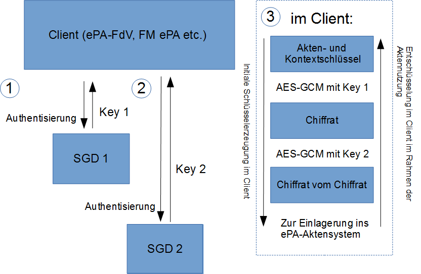
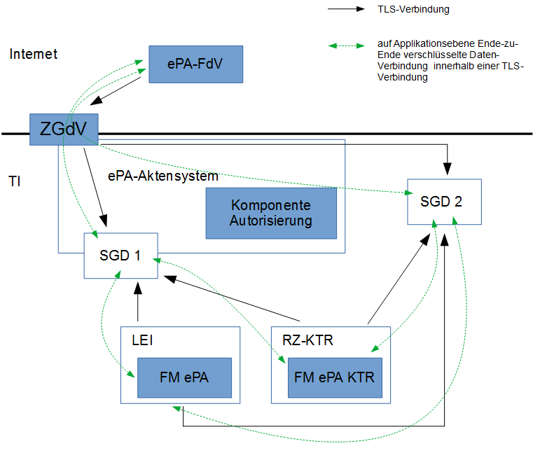
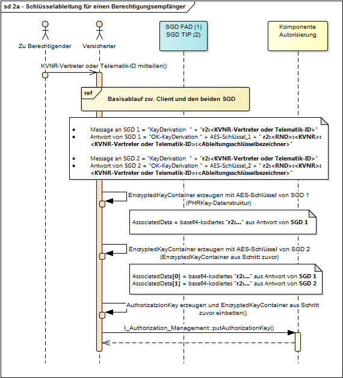
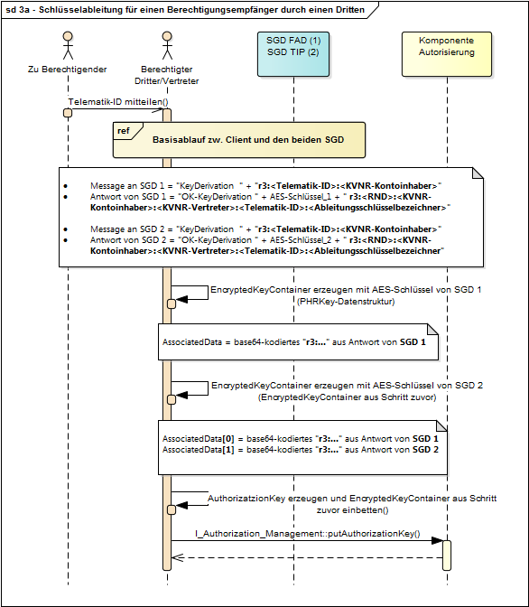
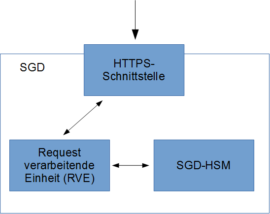

Elektronische Gesundheitskarte und Telematikinfrastruktur
Spezifikation
Schlüsselgenerierungsdienst
ePA
| Version | 1.5.0 |
| Revision | 571418 |
| Stand | 31.01.2022 |
| Status | freigegeben |
| Klassifizierung | öffentlich |
| Referenzierung | gemSpec_SGD_ePA |
Änderungen zur Vorversion
Anpassungen des vorliegenden Dokumentes im Vergleich zur Vorversion können Sie der nachfolgenden Tabelle entnehmen.
Dokumentenhistorie
| Version | Stand | Kap./Seite | Grund der Änderung, besondere Hinweise | Bearbeitung |
|---|---|---|---|---|
| 0.5.0 | 15.03.19 | initiale Erstellung | gematik | |
| 1.0.0 | 15.05.19 | freigegeben | gematik | |
| 1.1.0 | 28.06.19 | Einarbeitung P19.1 | gematik | |
| 1.2.0 | 02.10.19 | Einarbeitung P20.1 | gematik | |
| 1.3.0 | 02.03.20 | Einarbeitung P21.1 | gematik | |
| 1.4.0 | 22.06.20 | Einarbeitung P21.3 | gematik | |
| 1.4.1 | 05.11.20 | Einarbeitung P21.7 | gematik | |
| 1.4.2 | 19.02.21 | Kap. 8 | redaktionelle Anpassung | gematik |
| 1.5.0 | 31.01.22 | Einarbeitung ePA_Maintenance_21.5 | gematik |
Die vorliegende Spezifikation definiert Anforderungen an den Produkttyp "Schlüsselgenerierungsdienst ePA" (SGD) und beschreibt die Funktionsweise der Schlüsselgenerierung, die die Basis für die Ver- und Entschlüsselung von Akten- und Kontextschlüssel innerhalb eines Clients (ePA-FdV etc.) ist.
Das Dokument richtet sich an Hersteller und Anbieter des Produkts "Schlüsselgenerierungsdienst ePA" und des Produktes "ePA-Aktensystem". Weiterhin unterstützt das Dokument Hersteller von "ePA-Frontends des Versicherten" und Hersteller eines "Fachmodul ePA" bei der Entwicklung, da diese Produkte mit mehreren SGD kommunizieren müssen.
Dieses Dokument enthält normative Festlegungen zur Telematikinfrastruktur des deutschen Gesundheitswesens. Der Gültigkeitszeitraum der vorliegenden Version und deren Anwendung in Zulassungsverfahren wird durch die gematik GmbH in gesonderten Dokumenten (z. B. Dokumentenlandkarte, Produkttypsteckbrief, Leistungsbeschreibung) festgelegt und bekannt gegeben.
Wichtiger Schutzrechts-/Patentrechtshinweis
Die nachfolgende Spezifikation ist von der gematik allein unter technischen Gesichtspunkten erstellt worden. Im Einzelfall kann nicht ausgeschlossen werden, dass die Implementierung der Spezifikation in technische Schutzrechte Dritter eingreift. Es ist allein Sache des Anbieters oder Herstellers, durch geeignete Maßnahmen dafür Sorge zu tragen, dass von ihm aufgrund der Spezifikation angebotene Produkte und/oder Leistungen nicht gegen Schutzrechte Dritter verstoßen und sich ggf. die erforderlichen Erlaubnisse/Lizenzen von den betroffenen Schutzrechtsinhabern einzuholen. Die gematik GmbH übernimmt insofern keinerlei Gewährleistungen.
Es ist keine Abgrenzung gegenüber anderen Spezifikationen/Konzepten oder im Kontext derzeit nicht relevanten Themen erforderlich.
Anforderungen als Ausdruck normativer Festlegungen werden durch eine eindeutige ID sowie die dem RFC 2119 [RFC2119] entsprechenden, in Großbuchstaben geschriebenen deutschen Schlüsselworte MUSS, DARF NICHT, SOLL, SOLL NICHT, KANN gekennzeichnet.
Sie werden im Dokument wie folgt dargestellt:
<AFO-ID> - <Titel der Afo>
Text / Beschreibung
[<=]
Dabei umfasst die Anforderung sämtliche zwischen Afo-ID und der Textmarke [<=] angeführten Inhalte.
Ein Schlüsselgenerierungsdienst (SGD) generiert AES-256-Bit-Schlüssel für eine Entität, die sich mittels
gegenüber dem SGD authentisiert hat. Diese Generierung erfolgt über eine Schlüsselableitung auf Grundlage von geheimen SGD-spezifischen Ableitungsschlüsseln (Masterkeys) und Ableitungsvektoren. Diese Ableitungsvektoren enthalten konstante Merkmale, entweder die KVNR oder die Telematik-ID. Jeweils fließt notwendigerweise solch ein konstantes Merkmal aus der erfolgreichen Authentisierung und dem dabei verwendeten EE-Client-Zertifikat mit in die Ableitung ein. Damit werden nur für Berechtigte (erfolgreich Authentifizierte) diese Schlüssel abgeleitet und die jeweils generierten Schlüssel sind spezifisch – unterschiedliche Ableitungsvektoren erzeugen jeweils unterschiedliche abgeleitete Schlüssel.
Die Sicherung der medizinischen Daten bei der elektronischen Patientenakte [gemSysL_ePA] ist ein Zusammenspiel aus Zugriffskontrolle und Schlüsselmanagement (Verschlüsselung). Aus diesem Hybridmodell folgt: Auch wenn ein Client über mehrere SGD Schlüssel ableiten lassen kann, heißt dies noch nicht, dass für diese Schlüssel überhaupt ein passendes Chiffrat existiert oder dass ein Client auf solch ein Chiffrat Zugriff besitzt.
Die Schlüsselableitung wird in einem SGD innerhalb eines HSM mit einem SGD-spezifischen Firmware-Modul durchgeführt (SGD-HSM genannt). Durch technische Maßnahmen wird ausgeschlossen, dass ein Betreiber eines SGD die Schlüsselableitung selbst durchführen kann oder Zugriff auf die unverschlüsselten versichertenindividuellen Schlüssel erhalten kann. Nur das SGD-HSM kann die geheimen Ableitungsschlüssel verwenden. Es prüft dabei zuvor die erfolgreiche Authentisierung des Anfragenden und verwendet u. a. die darin authentisierten Angaben als Ableitungsvektoren. Es gibt aus der Perspektive eines Client (des ePA-Frontend des Versicherten (ePA-FdV), eines Konnektor-Fachmodul ePA (FM ePA) etc.) immer genau zwei SGD, die ein Client aufgrund der verwendeten SGD-HSM-Zertifikate sicher unterscheiden kann. Der Client fordert eine Schlüsselgenerierung jeweils bei den beiden SGD an und erhält damit zwei unabhängige AES-256-Schlüssel. Nach erfolgreicher Authentifizierung und Autorisierung durch das Aktensystem verwendet der Client diese zwei Schlüssel, um das vom ePA-Aktensystem erhaltene Chiffrat im "Zwiebelschalenprinzip" zu entschlüsseln. So erhält der Client den Akten- und den Kontextschlüssel im Klartext. Diese beiden Schlüssel sind dabei bezüglich der Ver- und Entschlüsselung durch eine gemeinsame Datenstruktur (vgl. Abschnitt ) fest miteinander verbunden. Die zwei SGD sind technisch, organisatorisch und wirtschaftlich unabhängig voneinander (vgl. Abschnitt ). Ein SGD kommt niemals mit dem Akten- und Kontextschlüssel eines Versicherten in Berührung.
Verliert der Versicherte seine eGK oder sein mobiles Endgerät mit seiner alternativen Versichertenidentität, kann er sich mit seiner neuen Identität (Folge-eGK oder einer anderen alternativen Versichertenidentität) am ePA-Aktensystem authentisieren. Da die Merkmale für die Schlüsselableitung in der Folgeidentität gleich sind (gleichbleibende KVNR) und kodiert ist, welcher Ableitungsschlüssel verwendet worden ist, kann ein Client mittels beider SGD die gleichen Schlüssel erhalten und die Entschlüsselung der Akten- und Kontextschlüssel wieder vornehmen. Der Verlust einer eGK eines Versicherten führt also nicht zum Verlust der Akte des Versicherten.
Analog ist in einer Folge-SMC-B die Telematik-ID konstant. Somit kann eine Leistungserbringerinstitution (LEI) bereits vergebene Berechtigungen und vorher von einem Versicherten für die LEI erzeugte Chiffrate weiterhin nutzen.
Notwendige Grundlage der Idee der Schlüsselableitung mittels der SGD ist, dass bei einem Kartenwechsel der eGK oder einem Wechsel der alternativen Versichertenidentität die KVNR eines Versicherten in den Zertifikaten der Folgekarte bzw. bei der Folgeidentität korrekt und konstant bleibt. Die Korrektheit der Kartenherausgabeprozesse ist – wie bei nahezu allen digitalen Prozessen in der TI – notwendige Voraussetzung. Analog bleibt bei einem Kartenwechsel einer SMC-B oder einer SMC-KTR die Telematik-ID konstant.
Es muss sichergestellt sein, dass nur erfolgreich authentifizierte Clients eine Schlüsselableitung durchführen können und dabei notwendigerweise die die Clients identifizierenden (konstanten) Merkmale in die Schlüsselableitung als Ableitungsvektor mit einfließen. Die Authentifizierung durch die SGD-HSMs der beiden SGD erfolgt unabhängig vom Aktensystem.
Ziele für die Schlüsselableitung:
Wenn die KVNR bzw. die Telematik-ID in einer Folgekarte oder Folgeidentität immer konstant ist, so kann diese (1) als eindeutiges Identifikationsmerkmal bspw. innerhalb einer Authentifizierung und Autorisierung verwendet werden und (2) als Basis für eine eindeutige Schlüsselableitung. Die Schlüsselableitung berechnet aus einem geheimen Ableitungsschlüssel (Mastersecret) und einer KVNR plus anderen Angaben (vgl. Abschnitte ff) deterministisch einen spezifischen AES-256-Schlüssel. Diese Schlüsselableitung wird in einem HSM mit einem speziellen Firmware-Modul durchgeführt, das verhindert, dass der Betreiber des HSMs (vgl. Abschnitt ) in den Ableitungsprozess Einblick erhält – er kennt den geheimen Ableitungsschlüssel nicht, und er kann die Authentifizierungs- und Autorisierungsfunktion im HSM nicht beeinflussen. Ein solcher abgeleiteter versicherten- und zugriffsregelindividueller AES-256-Schlüssel wird dem Client über einen beidseitig authentisierten Ende-zu-Ende-verschlüsselten Kanal zwischen SGD-HSM und dem Client zur Verfügung gestellt. Ein Versicherter verwendet solche abgeleiteten versichertenindividuellen AES-256-Schlüssel aus mehreren voneinander unabhängigen SGD. Ein Client (ein ePA-FdV, ein FM ePA etc.) kann die verschiedenen SGD voneinander unterscheiden. Die Erzeugung der abgeleiteten versichertenindividuellen AES-256-Schlüssel kann auf beliebig viele unabhängige SGD verteilt werden. Das Verfahren skaliert linear – es ist technisch leicht möglich, mehrere SGD zu verwenden.
Die Schlüsselableitungsfunktionalität ePA basiert aktuell auf genau zwei SGD pro Aktensystem (vgl. Abschnitt und Abschnitt ) gemäß . Im Folgenden wird derjenige SGD, den ein Anbieter eines Fachanwendungsspezifischen Dienstes (FAD) bereitstellen muss, als "SGD 1" bzw. "SGD FAD" bezeichnet. Derjenige SGD, der von einem von SGD 1 unabhängigen Dritten in der TI-Plattform (TIP) betrieben wird, wird im Folgenden als "SGD 2" bzw. "SGD TIP" bezeichnet. Mittels der beiden erhaltenen AES-256-Schlüssel verschlüsselt ein Client den Akten- und Kontextschlüssel (vgl. Abschnitt " ") im "Zwiebelschalenprinzip". Das entstandene Chiffrat wird dem ePA-Aktensystem zur Einlagerung übergeben.
Nach einer erfolgreichen Anmeldung am Aktensystem kann ein Versicherter Folgendes tun:

Abbildung 1: Überblick Zwiebelschalenprinzip bei der Ver- und Entschlüsselung
Ein wichtiger Aspekt: Das kryptographische Verfahren für die Generierung der spezifischen Schlüssel in den Schlüsselgenerierungsdiensten ist unabhängig von dem aktuell verwendeten Authentisierungsverfahren. Wenn bei der Authentisierung also zukünftig eine elliptische Kurve mit 512-Bit anstatt aktuell einer elliptischen Kurve mit 256-Bit verwendet werden soll (oder ein Quanten-Computing-resistentes Signatur-Verfahren), so ist dies ist für das grundsätzliche Verfahren nicht entscheidend. Die Schlüsselableitungsfunktionalität ist diesbezüglich unabhängig.
Der geheime Ableitungsschlüssel eines Schlüsselgenerierungsdienstes (SGD) wird regelmäßig neu erzeugt, so dass auch dort eine Schlüsseldiversifizierung vorhanden ist. Alte Ableitungsschlüssel müssen in den SGD weiter vorgehalten werden, solange sie potentiell benötigt werden. In einem späteren Release wird die (regelmäßige) Umschlüsselung einer ePA-Akte spezifikatorisch bearbeitet. Bei den SGD gibt es dafür jetzt schon vorbereitende Maßnahmen (vgl. Abschnitt , RND-Zufallswert). Bei einem Schlüsselwechsel bei der jeweiligen Akte (Umschlüsselung) muss auch eine neue Einlagerung (Schlüsselableitungsfunktionalität) vorgenommen werden (im Normalfall mittels eines neuen Ableitungsschlüssels). Das sichere Löschen von nicht mehr benötigten Ableitungsschlüsseln (Masterkeys) wird dann in diesem späteren Release ebenfalls spezifikatorisch bearbeitet. Die Ableitungsschlüssel besitzen eindeutige Bezeichner ( ) und sind unterscheidbar.
Die beteiligten Akteure sind:
Tabelle 1: beteiligte Akteure im Kontext Schlüsselableitungsfunktionalität
| Rolle | Beschreibung |
|---|---|
| der Versicherte (Kontoinhaber) | Der Versicherte nutzt das von seiner Krankenkasse für ihn bereitgestellte ePA-Aktensystem. Er ist Kontoinhaber. Er verwendet entweder ein ePA-FdV (s. u.) für den Aktenzugriff oder berechtigt eine LEI (bzw. in einem späteren Release einen LE) via ad-hoc-Autorisierung über ein FM ePA (s. u.). Dabei verwendet er entweder eine eGK- basierte AUT-Identität oder eine alternative Versichertenidentität zur Authentisierung jeweils am Aktensystem, am SGD 1 (s. u.) und am SGD 2 (s. u.). |
| ein Vertreter | Ein Vertreter ist ein Versicherter (besitzt also eine eGK oder einen alternative Versichertenidentität) und wurde vom Versicherten (Kontoinhaber) berechtigt, für diesen Handlungen in Bezug auf die ePA vorzunehmen (bspw. LEI im Namen des Kontoinhabers zu berechtigen). |
| eine Leistungserbringerinstitution (LEI) | Eine LEI ist von einem Versicherten berechtigt worden, auf dessen Akte zuzugreifen. Nach Anmeldung am Aktensystem und nach der Prüfung der Autorisierung durch das Aktensystem wird an die LEI ein "doppeltes" Chiffrat übergeben, das den Akten- und Kontextschlüssel der Akte des Versicherten enthält. Durch Zugriff auf die beiden SGD (s. u.) inkl. Authentifizierung der LEI erhält diese jeweils einen AES-256-Schlüssel und kann dann im "Zwiebelschalenprinzip" den Akten- und den Kontextschlüssel entschlüsseln. |
| ein Kostenträger (KTR) | Ein Kostenträger wird durch einen Versicherten (Kontoinhaber oder Vertreter) berechtigt, auf ein Aktenkonto zuzugreifen. Nach Anmeldung am Aktensystem und nach der Prüfung der Autorisierung durch das Aktensystem wird an den Client ein "doppeltes" Chiffrat übergeben, das den Akten- und Kontextschlüssel der Akte des Versicherten enthält. Durch Zugriff auf die beiden SGD (s. u.) inkl. Authentifizierung des KTR erhält diese jeweils einen AES-256-Schlüssel und kann dann im "Zwiebelschalenprinzip" den Akten- und den Kontextschlüssel entschlüsseln. |
| Anbieter ePA-Aktensystem | Ein Anbieter ePA-Aktensystem bietet ein ePA-Aktensystem im Auftrag einer Krankenversicherung deren Versicherten (Kontoinhaber) an. Der Anbieter verantwortet den sicheren Betrieb und die Verfügbarkeit des von ihm angebotenen ePA-Aktensystems. |
| Anbieter Schlüsselgenerierungsdienst ePA (SGD) | Ein Anbieter Schlüsselgenerierungsdienst ePA bietet die Nutzung der Schlüsselableitungsfunktionalität an. Für einen Versicherten müssen zwei SGD zur Verfügung stehen: ein SGD, der dem Aktensystem beigestellt ist, und ein SGD außerhalb des Aktensystems. Beide SGD sind technisch, organisatorisch und wirtschaftlich getrennt (Rollenausschluss). Beide SGD sind bis auf die unterschiedlichen jeweils zufällig erzeugten Ableitungsschlüssel technisch identisch, für beide SGD gilt dieselbe Spezifikation. |
Die beteiligten Komponenten und Dienste sind:
Tabelle 2: beteiligte Komponenten und Dienste im Kontext Schlüsselableitungsfunktionalität
| Komponente oder Dienst | Beschreibung |
|---|---|
| ePA-Frontend des Versicherten (ePA-FdV) | Das ePA-FdV tritt als Client gegenüber den beiden SGD (s. u.) auf. Von diesen beiden erhält es jeweils einen versichertenindividuellen geheimen Schlüssel (AES-256). Mit diesen beiden Schlüsseln werden nach der initialen zufälligen Erzeugung von Akten- und Kontextschlüssel im Client diese in ein interoperables Austauschformat kodiert und anschließend zwei Mal hintereinander verschlüsselt. Das "doppelte" Chiffrat übergibt das ePA-FdV an das ePA-Aktensystem (Komponente Autorisierung) zur Einlagerung. |
| Fachmodul ePA (FM ePA) im Konnektor einer LEI oder eines LE | Das FM ePA tritt als Client gegenüber den beiden SGD (s. u.) auf. |
| Fachmodul ePA im KTR-Consumer (FM ePA KTR) | Das FM ePA tritt als Client gegenüber den beiden SGD (s. u.) auf. |
| ePA-Aktensystem | Das ePA-Aktensystem stellt dem Versicherten eine ePA zur Verfügung. |
| ePA-Aktensystem, Zugangsgateway des Versicherten (ZGdV) | Das ZGdV nimmt Anfragen von ePA-FdV über seine HTTPS-Schnittstelle an und leitet diese Anfragen für bestimmte Pfadnamen, nämlich /SGD1 und /SGD2, im HTTP-Request jeweils an den SGD 1 oder den SGD 2 weiter. Welchen SGD welcher Anbieter verwendet, wird initial bei der Inbetriebnahme des Aktensystems festgelegt (vgl. Abschnitt ). |
| ePA-Aktensystem, Komponente Autorisierung | Die "Komponente Autorisierung" bewahrt den "doppelt" verschlüsselten Akten- und Kontextschlüssel (AuthorizationKey-Datenstruktur) auf. Sie übergibt diese Datenstruktur nach erfolgreicher Anmeldung eines Client an diesen. |
| SGD 1 als FAD |
Dem ePA-Aktensystem beigestellt gibt es einen SGD. Dieser ist unter dem Pfadnamen /SGD1 über das ZGdV für alle Clients ansprechbar. Der SGD generiert auf Nutzeranfrage verschiedene versichertenindividuelle AES-256-Schlüssel. Durch technische Maßnahmen wird dabei mit hoher Sicherheit ausgeschlossen, dass ein Betreiber eines SGD diese Schlüssel ermitteln kann. |
| SGD 2 der TIP |
Als Teil der zentralen TI ist dieser SGD unter dem Pfadnamen /SGD2 über das ZGdV für alle Clients ansprechbar. Für beide SGD (1 und 2) gilt dieselbe Spezifikation. |
Die folgende Grafik gibt einen Überblick über die beteiligten Komponenten und Dienste.

Abbildung 2: beteiligte Komponenten und Dienste im Kontext der Schlüsselableitungsfunktionalität ePA
Ein SGD 1 und ein SGD 2 sind fachlich gesehen baugleich – bis auf die eingesetzten geheimen und privaten Schlüssel ( (S1), (S3), (S4) und (S5)) und ihre Identität ( ) unterscheiden sie sich nicht. Insbesondere benötigt ein SGD keine Informationen aus dem ePA-Aktensystem.
Ein Client aus dem Internet (also ein ePA-FdV) erreicht einen SGD über das ZGdV des ePA-Aktensystems (vgl. ). Solch ein Client verwendet die auch für die Kommunikation mit dem Aktensystem verwendete HTTPS-Schnittstelle des ZGdV. Das ZGdV leitet HTTP-Requests mit dem Pfadname /SGD1 an die HTTPS-Schnittstelle des SGD 1 weiter (eigenständige TLS-Verbindung zwischen ZGdV und SGD). Analog tut das ZGdV dies für Requests mit dem Pfadnamen /SGD2 in Bezug auf den SGD 2. Auf Applikationsebene gibt es eine Ende-zu-Ende-Verschlüsselung zwischen den Clients und den SGD-HSMs der SGDs (vgl. Abschnitt ).
Ein Client aus der TI (FM ePA etc.) spricht die beiden SGD über deren HTTPS-Schnittstellen () direkt an. Die IP-Adressen erfahren solche Clients über DNS-Service-Discovery.
Der grundsätzliche Ablauf einer Anfrage (vgl. Abschnitt ff) ist in Bezug auf das Kommunikationsmuster bezüglich der beiden SGD immer gleich und wird im Folgenden beschrieben. Zur Vereinfachung der Darstellung ist der Ablauf sequenziell dargestellt. Für eine Performanzsteigerung muss ein Client die Anfragen an die beiden SGD parallelisieren ( ), was bis auf Schritt 6 leicht möglich ist. Eine noch detaillierte Erläuterung zu den kryptographischen Grundlagen der Kommunikation befindet sich in Abschnitt "".
Schritt 1:
Der Client verwendet die HTTPS-Schnittstelle des ZGdV, oder falls er aus Netzwerksicht Teil der TI ist (FM ePA etc.) die HTTPS-Schnittstelle eines SGD direkt, um den aktuellen öffentlichen ECIES-Schlüssel des SGD 1 zu erhalten (Pfadname der URL ist "/SGD1") (vgl. Schnittstelle " "). Das ZGdV leitet den HTTP-Request (HTTPS) an den SGD 1 weiter.
Schritt 2:
Der SGD 1 antwortet mit dem aktuellen authentisierten öffentlichen ECIES-Schlüssel des für den Nutzer (AUT-Zertifikat) avisierten SGD-HSM innerhalb des SGD 1 (vgl. A_17894-01 ). Dieser Schlüssel ändert sich alle 15 Minuten und ist dann jeweils für 30 Minuten für alle anfragenden Clients verwendbar. Der ECIES-Schlüssel des SGD-HSM ist durch das SGD-HSM signiert ( (S1)).
Schritt 3:
Der Client prüft das Zertifikat, die Signatur und den ECIES-Schlüssel des SGD-HSM von SGD 1 (). Er prüft dabei u. a., dass die Antwort von einem SGD-1-SGD-HSM kam.
Schritt 4:
Der Client erfragt analog zu Schritt 1 den aktuellen authentisierten öffentlichen ECIES-Schlüssel von SGD 2 (Pfadname der URL ist "/SGD2").
Schritt 5:
Der SGD 2 antwortet analog zu Schritt 2 mit dem signierten ECIES-Schlüssel des für den Nutzer vorgesehenen SGD-HSM innerhalb von SGD 2 (vgl. A_17894-01 ).
Schritt 6:
Der Client prüft analog zu Schritt 3 das Zertifikat, die Signatur und den ECIES-Schlüssel des SGD-HSM von SGD 2 (). Er prüft dabei u. a., dass die Antwort von einem SGD-2-SGD-HSM kam.
Schritt 7:
Der Client berechnet die Hashwerte der erhaltenen ECIES-Schlüsselwerte der beiden SGD-HSM aus Schritt 3 und Schritt 6.
Schritt 8:
Der Client erzeugt ein kurzlebiges ECIES-Schlüsselpaar ( [gemSpec_Krypt#]), was der Client später für die Request an SGD 1 und SGD 2 verwenden wird. Der Client führt den öffentlichen Client-ECIES-Schlüssel zusammen mit den Hashwerten aus Schritt 7 in ein Kodierung gemäß auf und signiert diese Kodierung mittels des AUT-Materials der eGK, der SMC-B, der SMC-KTR oder der alternativen Authentisierung.
Schritt 9:
Der Client verwendet die Operation GetAuthenticationToken bei SGD 1 um ein Authentisierungstoken zu erhalten. Dafür erzeugt der Client einen Zufallswert (Challenge) und sendet diesen verschlüsselt an das für ihn vorgesehene SGD-HSM bei SGD 1.
Schritt 10:
Die RVE innerhalb von SGD 1 prüft das AUT-Zertifikat, die Client-Signatur des Client-ECIES-Schlüssels und den Client-ECIES-Schlüssel. Falls alle Prüfungen ein OK liefern, bereitet die RVE den Request auf (OCSP-Responses, Umkodierung für die Innenschnittstelle zum den SGD-HSM etc.) und übergibt die verschlüsselte Nachricht an das SGD-HSM. Das SGD-HSM prüft ebenfalls das AUT-Zertifikat, die Client-Signatur des Client-ECIES-Schlüssels und den Client-ECIES-Schlüssel und erstellt ein Authentisierungstoken. Das SGD-HSM erstellt eine Nachricht, die die Challenge des Client, einen Hashwert (des Client-Schlüssels und des AUT-Zertifikats) und das erzeugte Authentisierungstoken enthält. Diese Nachricht verschlüsselt das SGD-HSM für den Client-ECIES-Schlüssel und übergibt das Chiffrat an die RVE. Diese kodiert die Nachricht um und antwortet dem Client.
Schritt 11:
Der Client entschlüsselt die Nachricht des SGD-HSM von SGD 1. In der entschlüsselten Nachricht prüft, es ob seine Challenge enthalten ist. Falls ja, kann es davon ausgehen, dass die Antwort wirklich vom SGD-HSM stammt. Es prüft den Hashwert (des Client-Schlüssels und des AUT-Zertifikats) und speichert das Authentisierungstoken für die folgende Verwendung innerhalb der Operation KeyDerivation.
Schritt 12:
Der Client erzeugt zufällig eine Request-ID, anschließend eine Nachricht. Diese enthält das Authentisierungstoken, die Request-ID und die je nach Anwendungsfall (vgl. Abschnitt ff) unterschiedliche Ableitungsregel. Diese Nachricht verschlüsselt der Client für das SGD-HSM und verwendet die Operation KeyDerivation von SGD 1.
Schritt 13:
Die RVE innerhalb von SGD 1 prüft das AUT-Zertifikat, die Client-Signatur des Client-ECIES-Schlüssels und den Client-ECIES-Schlüssel. (Hinweis: die RVE cacht die Prüfergebnisse ().) Falls alle Prüfungen ein OK liefern, bereitet die RVE den Request auf (OCSP-Responses, Umkodierung für die Innenschnittstelle zum den SGD-HSM etc.) und übergibt die verschlüsselte Nachricht an das SGD-HSM. Das SGD-HSM entschlüsselt die Nachricht des Client und überprüft, ob das Authentisierungstoken konsistent mit dem Client-ECIES-Schlüssel und dem AUT-Zertifikat des Client ist. Falls ja überprüft es die Ableitungsregel und führt, falls der Client berechtigt ist, die Schlüsselableitung durch. Das Ergebnis verschlüsselt inkl. Authentisierungstoken, Request-ID und Ableitungsvektor das SGD-HSM für den Client. Das Chiffrat übergibt das SGD-HSM an die RVE, die es nach Umkodierung an den Client als Response weiterleitet.
Die Schritte 14 bis 20 (siehe folgende Tabelle) sind analog zu den Schritten 9 bis 13, nur findet die Kommunikation zwischen Client und SGD 2 statt.
Tabelle 3: Tab_Übersicht_der_Kommunikationsschritte_eines_SGD-Clients
| Nr. | SDG-Client | SGD 1 | SGD 2 |
|---|---|---|---|
| 1 | Operation GetPublicKey bei SGD 1 aufrufen Eingabe: AUT-Zertifikat des Nutzers |
||
| 2 | Operation GetPublicKey Aktion: Prüfung des AUT-Zertifikats des Nutzers Ausgabe: aktueller signierter öffentlicher ECIES-Schlüssel des für den Nutzer avisierten SGD-HSM innerhalb des SGD 1 |
||
| 3 |
Prüfung des Zertifikats, der Signatur und des öffentlichen Schlüssels des SGD-HSM von SGD 1 | ||
| 4 |
Operation GetPublicKey bei SGD 2 aufrufen Eingabe: AUT-Zertifikat des Nutzers |
||
| 5 | Operation GetPublicKey Ausgabe: aktueller signierter öffentlicher ECIES-Schlüssel des für den Nutzer avisierten SGD-HSM innerhalb des SGD 2 |
||
| 6 |
Prüfung des Zertifikats, der Signatur und des öffentlichen Schlüssels des SGD-HSM von SGD 2 | ||
| 7 |
Berechnung der Hashwerte der öffentlichen ECIES-Schlüssel der beiden SGD-HSMs | ||
| 8 |
Erzeugung des Client-ECIES-Schlüsselpaars und Signatur des öffentlichen Schlüssel inkl. der Hashwerte aus Schritt 7 mittels eGK, SMC-B, SMC-KTR oder alternativer Authentisierung. | ||
| 9 |
Operation GetAuthenticationToken bei SGD 1 Eingabe: für SGD-HSM verschlüsselte Challenge (Zufallswert), AUT-Zertifikat, signierte Schlüssel aus Schritt 8 |
||
| 10 |
Operation GetAuthenticationToken Aktion: Prüfung des AUT-Zertifikats, Prüfung des Client-Signatur, Prüfung des Client-ECIES-Schlüssels, Entschlüsselung der Nachricht Ausgabe: Für den öffentlichen Client-ECIES-Schlüssel verschlüsselte Response. Innerhalb der Response befinden sich die Challenge des Clients (Zufallswert), das erzeugte Authentisierungstoken und der Hashwert des öffentlichen Client und des AUT-Zertifikats des Client. |
||
| 11 |
Entschlüsselung der Antwort. Vergleich Challenge (Zufallswert) mit dem Wert aus der Response, Vergleich des Hashwerts mit dem selbst erzeugten Hashwert, Authentisierungstoken für SGD 1 lokal für die folgende Operation KeyDerivation zwischenspeichern |
||
| 12 |
Operation KeyDerivation bei SGD 1 aufrufen Eingabe: für SGD-HSM verschlüsselte Nachricht: Authentisierungstoken, zufällige Request-ID des Client, Ableitungsregel |
||
| 13 |
Operation KeyDerivation Aktion: Prüfung Authentisierungstoken Ergebnis der Schlüsselableitung (vgl. Abschnitt ff) inkl. Prüfung der Berechtigung für die angeforderte Schlüsselableitung berechnen Ausgabe: für den öffentlichen Client-ECIES-Schlüssel verschlüsseltes Ergebnis der Schlüsselableitung |
||
| 14 |
Entschlüsselung der Antwort. Vergleich des Authentisierungstokens und der Request-ID in der Antwort mit den Werten aus dem Request, Auslesen des abgeleiteten AES-256-Schlüsselwerts der vom SGD-HSM für den Client abgeleitet wurde, ggf. Auslesen des Ableitungsvektors |
||
| 15 |
Operation GetAuthenticationToken bei SGD 2 aufrufen, analog zu Schritt 9 | ||
| 16 |
Operation GetAuthenticationToken analog zu Schritt 10 bei SGD 1 |
||
| 17 |
Entschlüsselung der Antwort. Prüfungen analog zu Schritt 11 |
||
| 18 |
Operation KeyDerivation bei SGD 2 aufrufen | ||
| 19 |
Operation KeyDerivation analog zu Schritt 13 bei SGD 1 |
||
| 20 |
Entschlüsselung der Antwort. Prüfungen analog zu Schritt 14 |
Der Client verwendet die erhaltenen beiden AES-256-Schlüssel je nach Anwendungsfall entweder für die Ver- oder die Entschlüsselung des Akten- und des Kontextschlüssels unter Verwendung des interoperablen Austauschformats nach Abschnitt . Dabei befinden sich die verwendeten Ableitungsvektoren innerhalb der "associated data" (AD), so dass später die ausgeführte Aktion durch einen autorisierten Client reproduzierbar ist.
Ein Versicherter (Kontoinhaber) eröffnet ein Konto und der verwendete Client (entweder das ePA-FdV oder das FM ePA) erzeugt den Akten- und Kontextschlüssel. Anschließend durchläuft der Client die Schritte 1 bis 20 aus Abschnitt . Als Nachricht (verschlüsselte "EncryptedMessage" in ) an die beiden SGD sendet der Client dabei jeweils eine Nachricht der Form
AT<256-Bit-Authentisierungstokenwert-in-Hexform> <Request-ID> KeyDerivation r1:<KVNR>
und erhält jeweils eine Antwort der Form
AT<256-Bit-Authentisierungstokenwert-in-Hexform> <Request-ID> OK-KeyDerivation <AES-256-Bit-Schlüssel-in-Hexform> r1:<256-Bit-RND-in-Hexform>:<KVNR>:<aktueller Ableitungsschlüsselbezeichner>
Die beiden nun erhaltenen AES-256-Schlüssel verwendet der Client zur zweifachen Verschlüsselung des von ihm erzeugten Akten- und Kontextschlüssel im "Zwiebelschalenprinzip" unter Verwendung des interoperablen Austauschformats nach Abschnitt . Dabei verwendet der Client jeweils die beiden von den SGD erhaltenen Teilzeichenketten der Form "r1:<256-Bit-RND-in-Hexform>:<KVNR>:<Ableitungsschlüsselbezeichner>" als "associated data" (AD) bei der Kodierung. Dieses entsprechend erzeugte und kodierte Chiffrat schickt der Client an die "Komponente Autorisierung" zur Einlagerung im Aktensystem.
Bei einer Umschlüsselung des Akten- und Kontextschlüssels bei einem späteren ePA-Release (vgl. Ende von Abschnitt ) wird aufgrund des Einflusses der jeweils vom SGD gewählten RND-Daten ein anderer Schlüssel generiert. Damit ist ein SGD nach aktueller Spezifikation schon jetzt auf diese Umschlüsselungsfunktionalität in Bezug auf die Client-Schnittstelle vorbereitet.
Hinweis: in den folgenden Sequenzdiagrammen wird auf die Aufführung des Authentisierungstokens und der Request-ID in der Nachricht (Message) an die SGD verzichtet.
Abbildung 3: Initiale Schlüsselableitung für den Kontoinhaber
Der Versicherte (Kontoinhaber) meldet sich beim Aktensystem an und erhält nach erfolgreicher Authentifizierung und Autorisierung die "AuthorizationKey"-Datenstruktur vom Aktensystem. Darin befindet sich das zweifach verschlüsselte Chiffrat aus Abschnitt . Dort kann der Client aus den AD, durch Leerzeichen getrennt, jeweils den Ableitungsvektor für den SGD 1 und für den SGD 2 auslesen. Diese haben jeweils folgende Form:
r1:<256-Bit-RND-in-Hexform>:<KVNR>:<Ableitungsschlüsselbezeichner>
Der Client sendet eine Nachricht der Form
AT<256-Bit-Authentisierungstokenwert-in-Hexform> <Request-ID> KeyDerivation r1:<256-Bit-RND-in-Hexform>:<KVNR>:<Ableitungsschlüsselbezeichner>
einmal an den SGD 1 und einmal an den SGD 2, jeweils mit den SGD-spezifischen Ableitungsvektoren. Nach müssen die Abfragen zur Generierung der beiden Schlüssel durch den Client parallelisiert werden. Das SGD-HSM prüft die Authentizität der Nachricht und verwendet u. a. die KVNR des Versicherten bei der Schlüsselableitung (versichertenindividuelle Schlüsselableitung). Der Client erhält die beiden gleichen AES-256-Schlüssel, die er wie zuvor in Abschnitt erhalten hat. Die Antwort der SGD ist dabei analog zu Abschnitt der folgenden
AT<256-Bit-Authentisierungstokenwert-in-Hexform> <Request-ID> OK-KeyDerivation <AES-256-Bit-Schlüssel-in-Hexform> r1:<256-Bit-RND-in-Hexform>:<KVNR>:<aktueller Ableitungsschlüsselbezeichner>
Nachdem beide Schlüssel (je einer aus SGD 1 und aus SGD 2) vorliegen, entschlüsselt der Client (vgl. ) das zweifach verschlüsselte Chiffrat im "Zwiebelschalenprinzip" mittels AES-GCM. Dabei prüft es die Authentizität der Chiffrats und der AD (Authenticated Encryption with Associated Data (AEAD)) bzw. damit auch die Authentizität des erhaltenen Klartextes.
Im Nicht-Fehlerfall liegen danach der Akten- und Kontext-Schlüssel in der Kodierung nach vor.
Dieses Vorgehen funktioniert unabhängig davon, ob der Versicherte seine eGK (oder alternative Versichertenidentität) wie bei der Aktenkontoeröffnung oder eine Folgekarte (oder "Folge"-Identität) verwendet.

Abbildung 4: Schlüsselableitung durch den Kontoinhaber
Für das Berechtigen eines Vertreters, einer LEI oder eines KTR durch den Kontoinhaber muss der Client des Kontoinhabers den Akten- und Kontextschlüssel für einen Berechtigungsempfänger verschlüsselten im Aktensystem hinterlegen. Hierfür liegen der Akten- und Kontextschlüssel temporär im Client des Kontoinhabers im Klartext vor. Der Client fragt jeweils SGD 1 und SDG 2 für eine für diesen Anwendungsfall spezifische Schlüsselableitung (r2) an.
Der Client sendet jeweils eine Nachricht der Form
AT<256-Bit-Authentisierungstokenwert-in-Hexform> <Request-ID> KeyDerivation r2:<KVNR-Vertreter oder Telematik-ID>
an beide SGD und erhält jeweils eine Antwort der Form
AT<256-Bit-Authentisierungstokenwert-in-Hexform> <Request-ID> OK-KeyDerivation <AES-256-Bit-Schlüssel-in-Hexform> r2:<256-Bit-RND-in-Hexform>:<KVNR-Kontoinhaber>:<KVNR-Vertreter oder Telematik-ID>:<aktueller Ableitungsschlüsselbezeichner>
Mit beiden erhaltenen Schlüsseln verschlüsselt der Client den Akten- und Kontextschlüssel und kodiert nach das zweifach verschlüsselte Chiffrat. Dabei werden die Ableitungsinformationen ebenfalls authentitäts- und integritätsgeschützt (AEAD). Die vom Client erzeugte Datenstruktur wird im Aktensystem für den Berechtigungsempfänger hinterlegt.

Abbildung 5: Schlüsselableitung für einen Berechtigungsempfänger
Ein Vertreter, eine LEI bzw. ein KTR meldet sich am Aktensystem an und erhält die AuthorizationKeys-Datenstruktur. Dort befindet sich das zuvor vom Versicherten hinterlegte zweifach verschlüsselte Chiffrat mit dem verschlüsselten Akten- und Kontextschlüssel. In den AD sind die Ableitungsinformationen enthaltenen, die ein Client für die Anfragen an die beiden SGD benötigt. Der Client sendet jeweils an die SGD eine Nachricht der folgenden Form
AT<256-Bit-Authentisierungstokenwert-in-Hexform> <Request-ID> KeyDerivation r2:<256-Bit-RND-in-Hexform>:<KVNR-Kontoinhaber>:<KVNR-Vertreter oder Telematik-ID>:<Ableitungsschlüsselbezeichner>
und erhält jeweils eine Antwort der Form
AT<256-Bit-Authentisierungstokenwert-in-Hexform> <Request-ID> OK-KeyDerivation <AES-256-Bit-Schlüssel-in-Hexform> r2:<256-Bit-RND-in-Hexform>:<KVNR-Kontoinhaber>:<KVNR-Vertreter oder Telematik-ID>:<Ableitungsschlüsselbezeichner>
Das SGD-HSM prüft, ob im vierten Feld der Ableitungsinformationen "<KVNR-Vertreter oder Telematik-ID>" zu den authentischen Angaben passt, die im Zertifikat der Anfrage stehen (plus Signaturprüfung, Sperrstatus u. v. m.). Bei erfolgreicher Prüfung führt das SGD-HSM die Ableitung durch und übergibt dem Client die generierten Schlüssel über den verschlüsselten und beidseitig authentisierten Datenkanal zwischen Client und SGD-HSM.
Der Client kann nun das zweifach verschlüsselte Chiffrat entschlüsseln und ihm stehen der Akten- und der Kontextschlüssel zur Verfügung.

Abbildung 6: Schlüsselableitung durch einen Berechtigten
Der Vertreter ist am Aktensystem angemeldet und möchte im Rahmen seiner Vertretungstätigkeit im Aktensystem eine LEI oder einen KTR berechtigen. Dafür muss der Client des Vertreters den Akten- und den Kontextschlüssel der Akte des Kontoinhabers für den Berechtigungsempfänger verschlüsselt hinterlegen.
Der Client sendet jeweils die Nachricht
AT<256-Bit-Authentisierungstokenwert-in-Hexform> <Request-ID> KeyDerivation r3:<Telematik-ID>:<KVNR-Kontoinhaber>
und erhält jeweils eine Antwort der Form
AT<256-Bit-Authentisierungstokenwert-in-Hexform> <Request-ID> OK-KeyDerivation <AES-256-Bit-Schlüssel-in-Hexform> r3:<256-Bit-RND-in-Hexform>:<KVNR-Kontoinhaber>:<KVNR-Vertreter>:<Telematik-ID>:<aktueller Ableitungsschlüsselbezeichner>
Mit den beiden von den SGD erhaltenen Schlüsseln verschlüsselt der Client den Akten- und Kontextschlüssel und bildet eine Datenstruktur gemäß . Diese wird für den Berechtigungsempfänger im Aktensystem hinterlegt.

Abbildung 7: Schlüsselableitung für einen Berechtigungsempfänger durch einen Vertreter
Analog zu Abschnitt verwendet der Client der LEI die AuthorizationKeys-Datenstruktur und die darin befindlichen AD. Der Client verwendet die Ableitungsvektoren aus den AD (diese werden mit "r3:" beginnen). Mit diesen beiden Ableitungsvektoren fragt der Client parallel jeweils SGD 1 und SGD 2 an, jeweils mit einer Nachricht der Form
AT<256-Bit-Authentisierungstokenwert-in-Hexform> <Request-ID> KeyDerivation r3:<256-Bit-RND-in-Hexform>:<KVNR-Kontoinhaber>:<KVNR-Vertreter>:<Telematik-ID>:<aktueller Ableitungsschlüsselbezeichner>
und erhält jeweils eine Antwort der Form
AT<256-Bit-Authentisierungstokenwert-in-Hexform> <Request-ID> OK-KeyDerivation <AES-256-Bit-Schlüssel-in-Hexform> r3:<256-Bit-RND-in-Hexform>:<KVNR-Kontoinhaber>:<KVNR-Vertreter>:<Telematik-ID>:<aktueller Ableitungsschlüsselbezeichner>
Dabei prüft das SGD-HSM innerhalb eines SGD zuvor, ob das Datenfeld "<Telematik-ID>" in den Ableitungsinformationen zu den authentischen Angaben passt, die im Zertifikat der Anfrage stehen (plus Signaturprüfung, Sperrstatus u. v. m.). Bei erfolgreicher Prüfung führt das SGD-HSM die Ableitung durch und übergibt dem Client die generierten Schlüssel über den verschlüsselten und beidseitig authentisierten Datenkanal.
Der Client kann nun das zweifach verschlüsselte Chiffrat entschlüsseln und ihm stehen der Akten- und der Kontextschlüssel zur Verfügung.

Abbildung 8: Schlüsselableitung für einen durch einen Vertreter berechtigten Berechtigten
Ein SGD speichert keine versichertenspezifischen Daten. Die Berechnung der versichertenindividuellen Schlüssel ist eine kryptographische Berechnung (Schlüsselableitung) auf Grundlage des jeweiligen SGD-spezifischen Ableitungsschlüssels und vom Client authentisiert übergebener Ableitungsvektoren. Ein solcher versichertenindividueller Schlüssel wird nur nach erfolgreicher Authentifizierung eines anfragenden Versicherten berechnet und nach der verschlüsselten Übertragung an den Versicherten sofort wieder im SGD-HSM gelöscht. Für den Aufbau des beidseitig authentisierten verschlüsselten Datenkanals zwischen SGD-HSM und Client wird das AUT-Zertifikat des Nutzes (bspw. des Versicherten) kurzzeitig benötigt. Dieses Zertifikat wird vom SGD nicht persistent gespeichert ( ).
Das SGD-HSM mit seinem speziellen HSM-Firmware-Modul und den begleitenden technischen und organisatorischen Prozessen ermöglicht es mit hoher Sicherheit, eine durch den Betreiber bestimmte Schlüsselableitung innerhalb des SGD auszuschließen. Das SGD-HSM entscheidet, ob eine ausreichende Authentifizierung stattgefunden hat und führt erst danach die Schlüsselableitung durch. Anschließend überträgt es die abgeleiteten spezifischen Schlüssel über einen beidseitig authentisierten und verschlüsselten Datenkanal (Ende-zu-Ende-Sicherheit) zum Client.
Damit dies möglich wird, muss man auf die Einschränkungen der Embedded-Umgebung, in dem das SGD-HSM-Firmware arbeitet, eingehen:
Für einen Versicherten müssen zwei unabhängige SGD-Instanzen zur parallelen Nutzung für die zweifache Schlüsselgenerierung zur Verfügung stehen. Beide SGD müssen dabei technisch, organisatorisch und wirtschaftlich unabhängig sein. Um dies sicherzustellen, gibt es einen SGD, den alle Aktensysteme als SGD 2 verwenden ().
A_17881
Der Anbieter des Schlüsselgenerierungsdienstes der zentralen TI-Plattform MUSS unabhängig von Anbietern von ePA-Aktensystemen sein, d. h. es sind mindestens jeweils eigenständige Rechtspersönlichkeiten mit eigenständigen operativen Geschäfts- und Betriebsführungen und es ist eine strikte Vermeidung von Personenidentitäten bzw. Doppelrollen in den Funktionen Geschäftsführung, leitende Mitarbeiter und Zugangsberechtigte zum Betriebsort des Schlüsselgenerierungsdienstes bzw. ePA-Aktensystems gewährleistet. <=
A_17883
Ein Anbieter eines ePA-Aktensystems und ein Anbieter eines SGD ePA MÜSSEN beim Wechsel ihrer jeweiligen SGD-Instanz die Weiterführung der Schlüsselableitungsfunktionalität ePA sicherstellen. <=
A_17884
Ein Anbieter eines ePA-Aktensystems und Anbieter eines SGD ePA MÜSSEN ein Migrationskonzept erstellen und pflegen, worin festgelegt wird, wie beim Wechsel ihrer SGD-Instanz die für deren Kunden verwendeten Ableitungsschlüssel sicher an die SGD-Folgeinstanz übergeben werden. <=
A_17885
Ein Anbieter eines ePA-Aktensystems MUSS sicherstellen, dass die von ihm verwendete SGD-Instanz (d. h. technisch formuliert "SGD 1") ePA-Aktensystemanbieter-spezifische Ableitungsschlüssel (Schlüsselableitungsfunktionalität ePA) verwendet. <=
A_17886
Ein Anbieter eines ePA-Aktensystems MUSS beim Wechsel der SGD-Instanz (vgl. alle Ableitungsschlüssel sicher an die SGD-Folgeinstanz übergeben und anschließend sicher in der alten SGD-Instanz löschen. <=
Verfügbarkeits- und Performanzanforderungen für einen SGD befinden sich in und sind dem Produkttypsteckbrief SGD zugewiesen.
Ähnlich wie einem TSP werden an den Betreiber eines SGD ePA Anforderungen u. a. an die sichere Betreiberumgebung aus [gemSpec_DS_Anbieter] gestellt (vgl. Zuordnung im Produkttypsteckbrief). Die zugeordneten Module sind "Basis-IS", "Basis-ISMS", "Erweitertes ISMS", "TI-Sicherheitsbericht" und "„Erweiterter TI-Sicherheitsbericht“.
A_18956
Der Anbieter eines Schlüsselgenerierungsdiensts MUSS die im Handbuch des eingesetzten Schlüsselgenerierungsdienstes beschriebenen Voraussetzungen für den sicheren Betrieb des Produktes gewährleisten. <=
A_18955
Der Hersteller des Schlüsselgenerierungsdienstes MUSS für sein Produkt im dazugehörigen Handbuch leicht ersichtlich darstellen, welche Voraussetzungen vom Betreiber und der Betriebsumgebung erfüllt werden müssen, damit ein sicherer Betrieb des Produktes gewährleistet werden kann. <=
A_17880
Ein SGD ePA MUSS mit den Stratum-1-NTP-Servern der TI synchronisieren. <=
Eine korrekte Zeit ist im SGD an drei Stellen wichtig:
Keiner dieser Anwendungszwecke verlangt, dass die Zeit in den o. g. Teilkomponenten im einstelligen Millisekundenbereich korrekt ist.
Eine Zeitdrift von weniger als 5 Minuten innerhalb des SGD (RVE, SGD-HSM) ist aus Sicherheitssicht akzeptabel.
Die praktische Erfahrung nach mehr als einen Jahr mit verschiedenen SGDs in der PU zeigt, dass es notwendig ist die Zeit in den SGD-HSM kontinuierlich über NTP zu korrigieren. Die HSMs besitzen je nach Hersteller unterschiedliche Mechanismen, die eine schädliche Auswirkung einer temporärer Fehlfunktion des verwendeten NTP-Servers verhindern (ruckartige Änderungen über in den SGD-HSM konfigurierte Schrankenwerte).
Ein weiterer Erfahrungswert ist, dass ein Nachgehen der lokalen Zeit in den SGD-HSM um mehr als 5 Minuten insbesondere die Verfügbarkeit des SGD gefährdet, da dann i. d. R. OCSP-Antworten aus der Zukunft zu kommen scheinen, der akzeptable Schwellwert dafür dann überschritten ist und vom einen SGD-HSM die OCSP-Antworten abgelehnt werden.
A_22485
Der Anbieter eines SGD ePA MUSS sicherstellen, dass die SGD-HSM in dessen SGD per NTP synchronisiert werden. Die dabei zu verwendenden Schwellwerte (HSM-Hersteller-spezifische Mechanismen in den HSM, um die schädliche Auswirkung von temporären Fehlfunktionen des verwendeten NTP-Servers zu verhindern) werden während der Erst-Initialisierung zusammen mit der gematik in den SGD-HSM festgelegt. <=
Ebenfalls ist ein betriebliches Monitoring der Zeit in den SGD-HSM notwendig.
A_22486
Der Anbieter eines SGD ePA MUSS sicherstellen, dass die Uhrzeit in den SGD-HSM in dessen SGD mindestens täglich automatisiert überwacht wird und bei substanziellen Abweichungen (bspw. mehr als +- 15 Sekunden) eine automatische Alarmierung an die SGD-HSM-Administration erfolgt. Die SGD-HSM-Administration MUSS bei Alarmierung dann Schritte zur Korrektur der Uhrzeit in den SGD-HSM ergreifen. <=
Ein SGD besteht aus

Abbildung 9: Strukturelemente eines SGD
Eingehende Requests eines Clients werden von der Request verarbeitenden Einheit (RVE) an der HTTPS-Außenschnittstelle (vgl. ) entgegengenommen. Dort werden sie entweder direkt beantwortet (Operation GetPublicKey, A_17895-*) oder aufbereitet und danach an das SGD-HSM gesendet. Abhängig von der Antwort des SGD-HSM erzeugt die RVE eine Antwort für den Client ( ) und sendet diese an ihn. Die RVE hat keinen Einblick in den beidseitig authentisierten und verschlüsselten Datenkanal zwischen Client und SGD-HSM (vgl. Abschnitt ). Die RVE stellt nur in Bezug auf die Verfügbarkeit (DoS-Gegenmaßnahmen, Einholen von signierten OCSP-Responses, Umkodieren von Requests etc.) des SGD eine kritische Komponente dar. In Bezug auf die Vertraulichkeit der Schlüssel erbringt sie keine Sicherheitsleistung.
Die Schnittstelle zwischen RVE und SGD-HSM ist eine Innenschnittstelle (vgl. Abschnitt ) und wird deshalb nicht ausspezifiziert beschrieben. Es werden nur notwendige Festlegungen getroffen.
A_17908-01
Die Request verarbeitende Einheit (RVE) eines SGD ePA MUSS alle Informationen, die ein SGD-HSM für die Zertifikatsprüfung nach benötigt, bereitstellen und dem SGD-HSM bei der Weiterleitung des Requests übergeben.
Wenn die RVE erkennt, dass die Informationen dem SGD-HSM nicht ausreichen werden, so MUSS die RVE die Weiterleitung an die SGD-HSM abbrechen (i. S. v. gar nicht erst durchführen) und den Request mit einer Fehlermeldung, so wie in den Außenschnittstellen beschrieben, beantworten.
<=
Ein SGD-HSM wird auf einen von der RVE weitergeleiteten Request in fünf Weisen antworten:
Ziel ist es, dass die SGD-HSM in einem SGD von einander unabhängig arbeiten können. D. h., u. a. sollen sie nicht ihre kurzlebigen Schlüssel (S4) und die damit verbundenen Schlüssel (S5) (vgl. jeweils Abschnitt "4.3 Schlüssel im SGD-HSM") untereinander synchronisieren müssen. Daher muss die RVE am Anfang des SGD-Protokoll für einen Client bei Erhalt der Nachricht 1 (vgl. Abschnitt "9.1 Ablauf Kommunikation zwischen Client und SGD-HSM") ein SGD-HSM aus der Menge der im SGD verfügbaren SGD-HSM auswählen. Diese Auswahl nimmt die RVE vor und teilt sie dem Client mit, in dem sie dem Client den aktuellen (S4)-Schlüssel des ausgewählten SGD-HSM bei GetPublicKey (vgl. Abschnitt "6.4 Operation GetPublicKey") als Protokoll-Nachricht 2 sendet. Alle weiteren Nachrichten dieses Client innerhalb dieses Protokollablaufes müssen dann genau das ausgewählte SGD-HSM erreichen. Dies bedeutet: die RVE muss für die folgenden vom Client gesendeten Nachrichten des SGD-Protokolls geeignete Routing-Entscheidungen vornehmen. Eine solche Routing-Entscheidung kann die RVE leicht treffen, denn im "PublicKeyECIES" (vgl. A_17900) ist der Hashwert des Ziel-(S4)-Schlüssels enthalten und der "PublicKeyECIES" ist Bestandteil jeder weiteren Protokoll-Nachricht des Clients.
A_22493
Die Request verarbeitende Einheit (RVE) eines SGD ePA MUSS folgende Vorgaben umsetzen:
Mit A_22493 ist es nun möglich, dass ein SGD-Client bspw. ein KTR-Consumer oder ein ePA-FdV nach einem GetPublicKey und einem GetAuthenticationToken beliebig viele Schlüsselableitungen mittels KeyDerivation durchführen kann, solange der verwendete (S4)-Schlüssel noch gültig ist (also 15 bis fast 30 Minuten). Damit sind für solch einen SGD-Client nicht mehr 6 * (Anzahl der abzuleitenden Schlüssel) SGD-Nachrichten notwendig, sondern nur noch 4 + 2*(Anzahl der abzuleitenden Schlüssel) SGD-Nachrichten. Für einen SGD-Client gibt es in Abschnitt "7.1 Mehrfachableitung" weiterführende Informationen.
Den wesentlichen Teil der Sicherheitsleistung eines SGD erbringt das SGD-HSM. Das SGD-HSM entscheidet, ob eine ausreichende Authentifizierung stattgefunden hat und führt erst danach eine Schlüsselableitung durch. Anschließend überträgt es die abgeleiteten spezifischen Schlüssel über einen beidseitig authentisierten und Ende-zu-Ende-verschlüsselten Datenkanal an den Client.
Ein SGD-HSM
Das SGD-HSM muss ein besonderes Firmware-Modul enthalten, das diese Funktionalität abbildet. Dieses hat einen sehr begrenzten Funktionsumfang (ECC- und AES-Schlüssel erzeugen, Signaturen prüfen, aus einem AUT-Zertifikat die KVNR bzw. Telematik-ID auslesen, eine Hashfunktion (HKDF) berechnen, ECIES Ver- und Entschlüsselung durchführen und AES-GCM ausführen). Die Mehrzahl der Funktionen sind schon standardmäßig im HSM vorhanden.
A_17907
Ein SGD ePA MUSS Folgendes sicherstellen:
Hinweis zu Punkt 7:
Analog zu den CC-Evaluierungen der TI-Komponenten muss es möglich sein, ohne dass Verschwiegenheitsregelungen die Klärung von fachlichen Punkten während der Sicherheitsbegutachtung behindern, die notwendige Dauer der Sicherheitsbegutachtung zu minimieren.
In einem SGD müssen verschiedene Schlüssel verfügbar sein, die durch ein SGD-HSM geschützt werden müssen.
A_17910-01
Ein SGD ePA MUSS sicherstellen, dass in seinem (oder seinen) SGD-HSM folgende Schlüssel existieren und durch das (die) SGD-HSM geschützt werden:
A_17911-01
Ein SGD ePA MUSS sicherstellen, dass die Schlüssel (S1) bis (S5) aus ausschließlich im Mehr-Augen-Prinzip erstellbar und änderbar sind (bzw. (S4) und (S5) autonom durch das SGD-HSM-Firmware-Modul). Ausgenommen davon sind schon über die PKI der TI Intergritäts- und Authentitätsgeschützte Schlüssel (Import von Cross-signierten neuen Root-Schlüsseln, Import von CA-Schlüsseln die über schon im SGD-HSM vorhandene Root-Schlüssel geprüft werden können). <=
A_17912-01
Ein SGD ePA MUSS sicherstellen, dass die Schlüssel (S2) aus Teil des SGD-HSM-Firmware-Moduls sind. <=
A_17913-01
Ein SGD ePA MUSS technisch sicherstellen, dass
der private Schlüsselbestätigungsschlüssel bei (S1) (vgl. jeweils ),
A_17914-01
Ein SGD ePA MUSS Folgendes sicherstellen:
Hinweis zu : Alle 15 Minuten wird ein neues ECIES -Schlüsselpaar (vgl. auch [gemSpec_Krypt# ]) erzeugt werden. Wenn kurz zuvor ein Client (ePA-FdV oder FM ePA) jedoch den öffentliche Schlüssel des alten Schlüsselpaares über die Schnittstelle GetPublicKey (A_17895-* ) erhalten hat, kann er das alte Schlüsselpaar maximal 15 Minuten weiter nutzen. Die Lebensdauer eines solchen ECIES-Schlüsselpaars in einem SGD-HSM ist also 30 Minuten.
A_18022-02
Ein SGD ePA MUSS Folgendes sicherstellen:
A_17915-01
Ein SGD ePA DARF die kurzlebigen privaten ECIES -Schlüssel ( (S4)) und die mit diesen 1:1-zugeordneten Ableitungsschlüssel ( (S5)) (Erstellung der Authentisierungstoken) NICHT über mehrere SGD-HSM synchronisieren.
<=
A_17916
Ein SGD ePA MUSS technisch sicherstellen, dass der private Schlüsselbestätigungsschlüssel ( (S1)) und die geheimen Ableitungsschlüssel ( (S3)) in dessen SGD-HSM ausschließlich verschlüsselt und im Mehr-Augen-Prinzip importierbar und exportierbar sind (Ziel: Sicherstellung der Verfügbarkeit dieser Schlüssel). Der SGD ePA MUSS technisch sicherstellen, dass beim Import und Export dieser Schlüssel notwendiger Weise ein Mitarbeiter der gematik beteiligt ist.
<=
A_17917
Ein SGD ePA MUSS durch technische Maßnahmen sicherstellen, dass
Verständnishinweis zu und : Dies ist analog zu den Vorgaben, wie seit 2014 die CVC-Root der TI betrieben wird. Damit wird der Betreiber eines SGD vom Verdacht befreit es könnte die geheimen Ableitungsschlüssel (S3) missbrauchen. Er ist technisch aufgrund der zwei Anforderungen nicht in der Lage dies zu tun.
Aufgrund der Bedeutung der Schlüsselbestätigungsschlüssel für die Sicherheitsleistung werden diese innerhalb eines Clients nicht über die üblichen Zertifikatsprüfverfahren überprüft, sondern die Zertifikate, die die Schlüsselbestätigungsschlüssel enthalten, sind direkt (explizit) in der TSL aufgeführt (vgl. (Prüfung eines SGD-HSM-Zertifikats) und ). Dadurch wirken etwaige Probleme bspw. in der Komponenten-PKI nicht auf die Sicherung der Authentizität der Schlüsselbestätigungsschlüssel (risikominimierende Maßnahme).
A_17846-01
Ein SGD ePA, der nicht der SGD der zentralen TI-Plattform ist, MUSS folgende Vorgaben durchsetzen.
Der öffentlichen Schlüsselbestätigungsschlüssel ( (S1)) MUSS in einem EE-Zertifikat nach dem Zertifikatsprofil [gemSpec_PKI#Tab_PKI_296] C.SGD-HSM.AUT aufgeführt werden.
Hinweis: vgl. auch [gemSpec_PKI#Abschnitt ].
A_17918-01
Ein SGD ePA der zentralen TI-Plattform MUSS folgende Vorgaben durchsetzen.
Hinweis: Die gematik stellt sicher, dass sich in der TSL nur SGD-HSM-Zertifikate nach #(1) und nach #(1) befinden, die zugehörig sind zu SGD-HSMs von zugelassenen SGD. Vergleiche auch (Prüfung eines SGD-HSM-Zertifikats).
In (Schlüssel in einem SGD-HSM) wird mit (S2) eine geordnete Liste von Zertifikatssignaturprüfschlüsseln eingeführt. Diese Schlüssel bildet die Grundlage für die Zertifikatsprüfung in einem SGD-HSM ( ). Einerseits handelt es sich um den RSA-Schlüssel der aktuellen X.509-Root-Version (RCA2) und analog den ECC-Schlüssel (RCA3) und andererseits um nicht von der TI-X.509-Root bestätigte X.509-eGK-CA-Zertifikate, die in der TSL der TI aufgeführt sind. Diese Schlüssel sind fester Bestandteil des SGD-HSM-Firmwaremoduls ( ). Alle zukünftig erzeugten CA-Zertifikate der TI werden durch die X.509-Root bestätigt werden [gemSpec_X.509_TSP#].
A_17952-01
Der SGD ePA MUSS Folgendes sicherstellen.
Aus Performanzgründen müssen für die Zertifikatsprüfung die CA-Zertifikate schon geprüft im SGD-HSM vorliegen. Ansatzpunkt der Prüfung von EE-Zertifikaten ist im SGD-HSM immer einen solcher CA-Schlüssel. Die RVE kennt die aktuelle Liste im SGD-HSM ( Punkt 1) und teilt dem SGD-HSM bei einer Requestweitergabe mit welcher Prüfschlüssel im SGD-HSM für die Zertifikatsprüfung der Richtige ist (vgl. ), also vom SGD-HSM zu verwenden ist. Wie ein SGD-HSM erkennen kann, ob ein importiertes Zertifikat ein CA-Zertifikat oder ein OCSP-Signer-Zertifikat ist, ist in [gemSpec_PKI] definiert.
A_17953
Der SGD ePA MUSS Folgendes sicherstellen.
Wenn bei Punkt (1) der Download aufgrund eines Fehlers nicht erfolgen kann, so greift das bei einer "Trust-service Status List" (TSL) übliche Standardvorgehen: die am Vortag heruntergeladene TSL hat eine in der TSL kodierte Gültigkeitsdauer (i. d. R. 30 Tage). Diese TSL ist dann im SGD weiterhin verwendbar und auch zu verwenden. Sollte der Download länger als diese Gültigkeitsdauer nicht funktionieren (was aufgrund der SLA des TSL-Dienstes quasi ausgeschlossen ist), so kann die RVE keine EE-Zertifikatsprüfungen mehr durchführen und muss alle Client-Requests (bis auf GetPublicKey) ablehnen, weil sie bspw. (Zertifikatsprüfung) erfüllen muss ("Falls eine der Prüfungen ein nicht-positives Ergebnis liefert, so MUSS die RVE des SGD mit einer entsprechenden Fehlermeldung [...] die weitere Requestverarbeitung abbrechen").
A_17954-01
Der SGD ePA MUSS wöchentlich überprüfen, ob neue X.509-Root-CA-Versionen existieren und entsprechende Cross-Zertifikate verfügbar sind. Falls dies der Fall ist, so MUSS der SGD ePA diese neue Root-Versionen in seinen SGD-HSMs importieren (vgl. Punkt 5).
<=
Hinweis: Nach der Erzeugung einer neuen Root-Version der X.509-Root-CA der TI werden dessen selbstsigniertes Zertifikat und Crosszertifikate auf den Download-Punkt https://download.tsl.ti-dienste.de/ECC/ROOT-CA/ abgelegt. Automatisiert kann der SGD ePA von dort die Verfügbarkeit neuer Versionen überwachen. Im Regelfall wird alle zwei Jahre eine neue Root-Version erzeugt.
Ebenfalls kann man https://download.tsl.ti-dienste.de/ECC/Root-CA/roots.json verwenden. Dort werden die aktuellen Root-Zertifikate inkl. deren Crosszertifikate gepflegt. Implementierungshinweis: die Dateigröße der JSON-Datei kann man als Hashfunktion verwenden. Mit dieser Idee kann man bspw. via curl die HTTP-Methode HEAD verwenden, und damit erfahren ob die lokale Kopie der JSON-Datei noch aktuell ist.
Die JSON-Datei ist ein Array in dem Associative Arrays als Elemente aufgeführt werden. Diese Elemente enthalten je ein Root-Zertifikat inkl. Crosszertifikate für das chronisch vorhergebende und das nachfolgende Root-Zertifikat. D. h., kryptographisch gesehen stellt dies eine doppelt verkettet Liste dar. Die Element im Array sind in chronologischer Ordnung sortiert.
[
{ "name" : "RCA1", "CN" : "GEM.RCA1", "cert" : "…base64…", "prev” : "", "next" : "….base64…", "SKI" : "Subject-Key-Identifier als Hexwert" },
{ "name" : "RCA2", … },
{ "name" : "RCA3", … },
…
]
Der Vertrauensraum der TI (also die PKI der TI) wird so wie der eIDAS-Vertrauensraum technisch über eine „Trust-service Status List“ nach der dem europäischen Standard ETSI TS 102 231 [ETSI_TS_102_231_v3.1.2] abgebildet. Eine TSL führt verschiedene TSP (CA) auf und einige ihrer CA-Zertifikate.
Im Zusammenspiel dazu gibt es noch die X.509-Root der TI. Über die Prüfung mittels der X.509-Root kann man für bestimmte Anwendungsfälle äquivalente Prüfaussagen wie über die Prüfung mittels der TSL treffen. Die Prüfung über die X.509-Root ist technisch deutlich einfacher als über die TSL, weswegen dieser Weg auch im SGD-HSM verwendet wird.
In der TSL sind neben Metainformationen zu den CA-Zertifikaten ebenfalls OCSP-Responder-Zertifikate aufgeführt. Diese müssen nicht notwendiger Weise per kryptographischer Signaturprüfung auf die CA-Zertifikate rückführbar sein zu den CA über die die Responder Sperrauskünfte geben dürfen. Dies ist ein wichtiger Unterschied im Vergleich zur Prüfung über die X.509-Root.
Bei der Zuordnung der OCSP-Responder-Zertifikate zu den CA-Zertifikaten bei der Erstellung der Import-Listen für die Schlüssel (S2) (vgl. A_17910-*) für die SGD-HSM-Initialisierung ist zu beachten, dass nach dem TSL-Modell alle OCSP-Responder die für einen TSP definiert sind für alle CA desselben TSP Sperrauskünfte geben dürfen. Sind also bspw. für einen TSP in der TSL drei CA-Zertifikate angegeben und ein OCSP-Responder-Zertifikat, so kann dieser Responder für alle drei CA Sperraussagen treffen. Sind mehr als ein OCSP-Responder-Zertifikat pro TSP definiert, so drüber alle OCSP-Responder für alle CA desselben TSP Sperraussagen treffen. Es gibt also ein n zu m Zuordnung, sie sich in der Import-Liste widerspiegeln muss.
Um die Aufgabe der Initialisierung der SGD-HSM zu unterstützen stellt die gematik auf Anfrage ein Programm zur Verfügung, dass diese Zuordnung aus einer aktuellen TSL automatisch erzeugt. Im Rahmen der Schlüsselzeremonie also der Initialisierung der SGD-HSM muss gemäß A_17916 der Anbieter des SGD und ein Vertreter der gematik die Import-Liste gemeinsam in die SGD-HSM importieren, dafür muss diese Liste zwischen beiden Parteien konsentiert sein – Überprüfung der Korrektheit der Liste im Mehr-Augen-Prinzip.
In diesem Abschnitt wird die Ablauflogik im speziellen HSM-Firmware-Modul beschrieben. Diese Beschreibung ist Grundlage der für die Zulassung notwendigen Sicherheitsüberprüfung (vgl. ).
Damit im SGD-HSM nur für den jeweils Berechtigten eine Schlüsselableitung durchgeführt wird, muss dessen Request auf Authentizität geprüft werden. Dafür muss dessen AUT-Zertifikat innerhalb des SGD-HSMs überprüft werden.
Eine Standard-TI-Prüfung auf Basis der TSL ist technisch relativ komplex und ist insbesondere in beschränkten Laufzeitumgebungen wie Chipkarten oder HSM-Firmware-Modulen nur schwer umsetzbar. Damit diese Prüfung technisch praktikabel ist, wird bei der Prüfung des AUT-Zertifikats die Signaturkette auf die X.509-Root der TI geprüft. Es werden ebenfalls OCSP-Antworten notwendigerweise ausgewertet.
A_17919-01
Ein SGD ePA MUSS folgende Vorgaben durchsetzen:
Hinweis zu :
Das SGD-HSM kann davon ausgehen, dass die X.509-Root-CA und alle in der PKI-Hierarchie folgenden CAs korrekt formatierte Zertifikate ausgeben. Es muss also vom SGD-HSM nicht die vollständige Konformität der erhaltenen Zertifikate zu den in [gemSpec_PKI] definierten Zertifikatsprofilen geprüft werden, was technisch in einer beschränkten Laufzeitumgebung schwierig ist.
A_18010
Ein SGD ePA MUSS sicherstellen, dass dessen SGD-HSM mindestens alle 24 Stunden die Schlüssel aus der Prüfschlüsselliste gemäß auf zeitliche Gültigkeit hin überprüft. Ist eine solcher Prüfschlüssel nur noch weniger als 24 Stunden gültig, so MUSS das SGD-HSM diesen Schlüssel aus seiner Prüfschlüsselliste löschen. Ausgenommen davon sind die Root-Schlüssel aus Punkt 2. <=
Die Sonderbehandlung von Root-Schlüsseln im SGD-HSM in A_18010 ist analog definiert worden wie das Verhalten im COS bei G2-Karten. Ein SGD-HSM kann nach A_21274 davon abweichen und die Gültigkeitsdauer auch bei Root-Schlüsseln streng durchsetzen.
A_21274
Ein SGD ePA KANN bei der Umsetzung von A_18010 auf die Sonderbehandlung von Root-Schlüsseln verzichten, d. h. diese KANN das SGD-HSM analog zu CA-Schlüsseln nach Ablauf der Gültigkeitsdauer im SGD-HSM löschen. <=
A_18027
Ein SGD ePA MUSS sicherstellen, dass dessen SGD-HSM den Client-ECIES-Schlüssel und dessen Signatur wie folgt prüft.
A_18026-01
Ein SGD ePA MUSS folgende Vorgaben durchsetzen:
Bei der Umsetzung von GetAuthenticationToken () MUSS die RVE dem SGD-HSM (das für den Client bestimmt ist)
A_17926
Ein SGD ePA MUSS folgende Vorgaben durchsetzen:
Beispiel zu A_17926:
Sei RND="123" und KVNR="a4b5c6". Wenn im Algorithmus in Tabelle 3 a="r1:<RND>:<KVNR>" gesetzt wird, und a als Ableitungsvektor verwendet werden soll, so müssen die Werte der Variablen RND und KVNR interpoliert werden. Es entsteht damit die Zeichenkette a="r1:123:4a5b6c". Dieser Wert von a muss dann als Wert des Ableitungsvektor bei der Schlüsselableitung verwendet werden.
A_17920-02
Ein SGD ePA MUSS folgende Vorgaben durchsetzen:
Hinweis: nach wird für die Schlüssel als Schlüsselableitungsfunktion die HKDF nach [RFC-5869] auf Basis von SHA-256 verwendet. Ebenso befinden sich in [gemSpec_Krypt#] die Vorgaben zur Mindestentropie.
Man beachte, dass absichtlich keine Doppelpunkte im Bezeichner zugelassen sind.
Beispiele für gültige Ableitungsschlüsselbezeichner:
Testmöglichkeit:
echo 'Bezeichner 2021-Test 1' | \
perl -ne 'print /^\w[\w -]{1,7167}$/ ? "OK: " : "UNGÜLTIG: ", $_;'
A_18030
Ein SGD ePA MUSS folgende Vorgaben durchsetzen:
Bei der Umsetzung von KeyDerivation () MUSS die RVE dem SGD-HSM (das für den Client bestimmt ist)
A_17922
Ein SGD ePA MUSS folgende Vorgaben durchsetzen: Nachdem das SGD-HSM erfolgreich die Authentizität der Anfrage mittels überprüft hat und den Klartext erhalten hat, MUSS es den erhaltenen Klartext analysieren.
Es entfernt den Authentisierungstoken und die Request-ID inkl. folgenden Leerzeichen vom Anfang der Nachricht des Clients und speichert das Authentisierungstoken und die Request-ID für die Erzeugung der Antwort.
(Beispiel:
"AT1ce627dd5e4c6536ca0dd93f896744d42c6580537953a49fcc5840dd8f8f4efa 7522d04ca28f2c6d3f5a53b2a31aebe1f91f2cfb75145b35c9a01fae7930340c KeyDerivation r2:7f8f77003dbab49c3a4e32f44726f92324d292fa668fde5ebc3424397986be99:107299005A112102647:2-20a1201-001:Bezeichner ACME Q1 2020"
Das Authentisierungstoken ist gleich "AT1c...efa", die Request-ID ist gleich "7522..340c". Die restliche Zeichenkette des Klartexts ist die Eingabe für den Algorithmus in [gemSpec_SDG_ePA#Tab_Kommandoabarbeitung_im_SGD-HSM].
)
Das SGD-HSM MUSS den in [gemSpec_SDG_ePA#Tab_Kommandoabarbeitung_im_SGD-HSM] aufgeführten Algorithmus implementieren und verwenden. Wenn der Algorithmus mit einem FAIL abbricht, so MUSS das SGD-HSM dies mit einem entsprechender Fehlermeldung an das RVE weitergeben.
Anderenfalls MUSS das SGD-HSM die durch den Algorithmus erzeugte Antwort-Zeichenkette erweitern, indem es das gespeicherte Authentisierungstoken und die Request-ID inkl. folgenden Leerzeichen vor die Antwort-Zeichenkette stellt. Diese erhaltene Zeichenkette ist der Klartext, der den Client erreichen solle. Diesen Klartext MUSS das SGD-HSM gemäß den Vorgaben aus [gemSpec_Krypt#] verschlüsseln (ECIES-Verfahren mit Authenticated Encryption) und mit einer positiven Rückmeldung (OK) an die RVE das erzeugte Chiffrat im Format gemäß übergeben.
<=
Tabelle 4: Tab_Kommandoabarbeitung_im_SGD-HSM
| Sei mit "Nachricht" die authentifizierte Nachricht des Clients, ohne das Authentisierungstoken und die Request-ID (inkl. folgendem Leerzeichen) am Anfang der Nachricht, bezeichnet. Sei IKM das "input key material" und info das "info"-Feld beides gemäß [RFC-5869]. Mit "<>" sei die Variableninterpolation bezeichnet, bspw. mit a="x1y2z3" und s="a<a>" folgt s gleich "ax1y2z3". (1) Prüfe ob die Nachricht mit "KeyDerivation " (14 Zeichen) beginnt, ansonsten FAIL. (2) Sei s gleich die Nachricht ohne die ersten 14 Zeichen (also ohne "KeyDerivation "). (3) Prüfe ob s entweder mit "r1", "r2" oder mit "r3" beginnt, ansonsten FAIL. (4) Sei KVNR die authentifizierte KVNR gemäß aus dem geprüften ( ) AUT-Zertifikat. Falls das AUT-Zertifikat ein nicht-eGK-Zertifikat ist, dann sei KVNR="" (leere Zeichenkette). (5) Sei TELEMATIK_ID die authentifizierte Telematik-ID aus dem geprüften ( ) AUT-Zertifikat. Falls das AUT-Zertifikat ein eGK-Zertifikat ist, dann sei TELEMATIK_ID="" (leere Zeichenkette). Hinweis: die Prüfung, ob eine Umkodierung der TELEMATIK_ID notwendig ist (vgl. A_18003) erfolgt erst kurz vor dem Gebrauch der Variable in (12.5) oder (14.4). Der Entwickler kann selbst entscheiden, ob er schon hier die Prüfung durchführt. (6) Sei BEZ der Schlüsselbezeichner ( ) des aktuellen (also jüngsten) Ableitungsschlüssel ( (S3)). (7) Sei s[0] bis s[n] die Teilzeichenketten von s, die durch ":" getrennt werden. (8) Wenn n gleich 0, dann FAIL. (Verständnishinweis: vgl. Abschnitt [gemSpec_SGD_ePA#] "r1:<KVNR>" ) (9) Wenn s[0] gleich "r1" und n gleich 1 ist: (9.1) Wenn KVNR gleich "" (leere Zeichenkette) ist, dann FAIL. (9.2) Wenn s[1] ungleich KVNR, dann FAIL. (9.3) Erzeuge RND gleich ein 256 Bit langer Zufallswert in Hexadezimalschreibweise kodiert ohne "0x" am Anfang. (9.4) Erzeuge a="r1:<RND>:<KVNR>:<BEZ>". (9.5) Sei Key die ersten 256 Bits der Schlüsselableitungsfunktion nach [gemSpec_Krypt#] mit IKM der aktuelle Ableitungsschlüssel und info=a. Sei Key in Hexadezimalschreibweise kodiert ohne "0x" am Anfang. (9.6) Die Antwort ist gleich "OK-KeyDerivation " + Key + " " + a. (9.7) ENDE |
| (Verständnishinweis: vgl. Abschnitt [gemSpec_SGD_ePA#] "r1:<256-Bit-RND-in-Hexform>:<KVNR>:<Ableitungsschlüsselbezeichner>" ) (10) Wenn s mit "r1:" beginnt: (10.2) Wenn n ungleich 3 ist, dann FAIL. (10.3) Wenn s[3] keinen im SGD-HSM verfügbaren Ableitungsschlüssel bezeichnet, dann FAIL. (10.4) Wenn die Länge von s[1] ungleich 64 ist, dann FAIL. (10.4) Wenn KVNR gleich "" (leere Zeichenkette), dann FAIL. (10.5) Wenn s[2] ungleich KVNR ist, dann FAIL. (10.6) Führe die Schlüsselableitung nach [gemSpec_Krypt#] mit dem durch s[3] bezeichneten Ableitungsschlüssels (IKM) und info gleich s durch. Sei Key der abgeleitete 256-Bit Schlüssel in Hexadezimalschreibweise kodiert (ohne "0x"). (10.7) Die Antwort ist gleich "OK-KeyDerivation " + Key + " " + s. (10.8) ENDE (Verständnishinweis: vgl. Abschnitt [gemSpec_SGD_ePA#] "r2:<KVNR-Vertreter oder Telematik-ID>" ) (11) Wenn s[0] gleich "r2" ist und n gleich 1: (11.1) Wenn s[1] gleich "" (leere Zeichenkette), dann FAIL. (11.2) Wenn KVNR gleich "" (leere Zeichenkette), dann FAIL. (11.3) Erzeuge RND gleich ein 256 Bit langer Zufallswert in Hexadezimalschreibweise kodiert ohne "0x" am Anfang. (11.4) Erzeuge a="r2:<RND>:<KVNR>:" + s[1] + ":<BEZ>" (11.5) Sei Key die ersten 256 Bits der Schlüsselableitungsfunktion nach [gemSpec_Krypt#] mit IKM der aktuelle Ableitungsschlüssel und info=a. Sei Key in Hexadezimalschreibweise kodiert ohne "0x" am Anfang. (11.6) Die Antwort ist gleich "OK-KeyDerivation " + Key + " " + a. (11.7) ENDE (Verständnishinweis: vgl. Abschnitt [gemSpec_SGD_ePA#] "r2:<256-Bit-RND-in-Hexform>:<KVNR-Kontoinhaber>:<KVNR-Vertreter oder Telematik-ID>:<Ableitungsschlüsselbezeichner>" ) (12) Wenn s[0] gleich "r2" ist: (12.1) Wenn n ungleich 4 ist, dann FAIL. (12.2) Wenn die Länge von s[1] ungleich 64 ist, dann FAIL. (12.3) Wenn s[2] gleich "" (leere Zeichenkette), dann FAIL. (12.4) Wenn s[4] keinen im SGD-HSM verfügbaren Ableitungsschlüssel bezeichnet, dann FAIL. (12.5) Wenn KVNR gleich "" (leere Zeichenkette) und (logisches und) TELEMATIK_ID gleich "" (leere Zeichenkette), dann FAIL. (12.6) Führe für die Variable TELEMATIK_ID die Prüfung und ggf. Umkodierung nach durch. (12.7) Wenn (s[3] ungleich TELEMATIK_ID) und (logisches und) (s[3] ungleich KVNR), dann FAIL. (12.8) Führe die Schlüsselableitung nach [gemSpec_Krypt#] mit dem durch s[4] bezeichneten Ableitungsschlüssels (IKM) und info gleich s durch. Sei Key der abgeleitete 256-Bit Schlüssel in Hexadezimalschreibweise kodiert (ohne "0x"). (12.9) Die Antwort ist gleich "OK-KeyDerivation " + Key + " " + s. (12.10) ENDE (Verständnishinweis: vgl. Abschnitt [gemSpec_SGD_ePA# ] "r3:<Telematik-ID>:<KVNR-Kontoinhaber>" ) (13) Wenn s[0] gleich "r3" und n gleich 2: (13.1) Wenn KVNR gleich "" (leere Zeichenkette) ist, dann FAIL. (13.2) Erzeuge RND gleich ein 256 Bit langer Zufallswert in Hexadezimalschreibweise kodiert ohne "0x" am Anfang. (13.3) Erzeuge a="r3:<RND>:" + s[2] + ":<KVNR>:" + s[1] + ":<BEZ>" (13.4) Sei Key die ersten 256 Bits der Schlüsselableitungsfunktion nach [gemSpec_Krypt#] mit IKM gleich der aktuelle Ableitungsschlüssel und info=a. Sei Key in Hexadezimalschreibweise kodiert ohne "0x" am Anfang. (13.5) Die Antwort ist gleich "OK-KeyDerivation " + Key + " " + a. (13.6) ENDE (Verständnishinweis: vgl. Abschnitt [gemSpec_SGD_ePA#] "r3:<256-Bit-RND-in-Hexform>:<KVNR-Kontoinhaber>:<KVNR-Vertreter>:<Telematik-ID>:<aktueller Ableitungsschlüsselbezeichner>" ) (14) Wenn s[0] gleich "r3" ist: (14.1) Wenn n ungleich 5 ist, dann FAIL. (14.2) Wenn die Länge von s[1] ungleich 64 ist, dann FAIL. (14.3) Wenn s[5] keinen im SGD-HSM verfügbaren Ableitungsschlüssel bezeichnet, dann FAIL. (14.4) Führe für die Variable TELEMATIK_ID die Prüfung und ggf. Umkodierung nach durch. (14.5) Wenn s[4] ungleich TELEMATIK_ID, dann FAIL. (14.6) Sei Key die ersten 256 Bits der Schlüsselableitungsfunktion nach [gemSpec_Krypt#] mit IKM gleich der aktuelle Ableitungsschlüssel und info gleich s. Sei Key in Hexadezimalschreibweise kodiert ohne "0x" am Anfang. (14.7) Die Antwort ist gleich "OK-KeyDerivation " + Key + " " + s. (14.8) ENDE (15) FAIL |
A_17924-01
Ein Client eines SGD ePA MUSS für die Anfragen an das SGD-HSM die Syntax der Kommandos und der Antworten des SGD-HSMs (für die Kommandos im verschlüsselten "EncryptedMessage"-Feld in und die Auswertung der entschlüsselten Antwort ("<Authentisierungstoken> <Request-ID> OK-KeyDerivation ...")) gemäß verwenden und auswerten können. <=
A_20975
Ein SGD ePA MUSS folgende Vorgaben durchsetzen: Ein SGD-HSM MUSS es ermöglichen die aktuell im SGD-HSM gültigen Zertifikatssignaturprüfschlüssel (S2) (inkl. der Root-Schlüssel) (vgl. A_17910-*) mit ihren konkreten Schlüsselwerten (öffentliche Schlüsselwerte) auszugeben. <= <=
A_20976
Ein SGD ePA MUSS folgende Vorgaben durchsetzen: Ein SGD-HSM MUSS es ermöglichen über alle im SGD-HSM befindlichen Ableitungsschlüssel (S3) (vgl. A_17910-*) zu iterieren und dabei pro Ableitungsschlüssel das Tupel (dessen Ableitungsschlüsselbezeichner (vgl. A_17920-*), dessen Ableitungsschlüsselprüfwert) auszugeben.
Der Ableitungsschlüsselprüfwert eines Ableitungsschlüssels wird erzeugt indem man
A_22501
Ein SGD ePA MUSS als Teil des Lieferumfangs SGD-Produkt einem Betreiber des SGD Kommandozeilen-Tools zur Verfügung stellen, die folgende Leistungen ermöglichen.
Die RVE ist dafür verantwortlich neu in der TSL aufgeführte Prüfschlüssel automatisch in die SGD-HSM zu importieren (vgl. Abschnitt " "). Die SGD-HSM stellen die Authentiztität der neu importieren Prüfschlüssel über die Signaturprüfung auf Grundlage von schon im SGD-HSM vorhandenen Root- und CA-Schlüsseln sicher. Um im Betrieb zu erkennen, ob dieses Update evtl. fehlerhafter Weise nicht erfolgt ist, wird mit A_22502-* eine automatische Überprüfung (Abgleich Ist-Soll-Stand der Prüfschlüssel in den SGD-HSM) gefordert.
A_22502
Der Anbieter eines SGD ePA MUSS sicherstellen, dass der SGD mindestens einmal pro Woche die von der gematik veröffentlichte Liste der öffentlichen (S2)-Zertifikatssignaturprüfschlüssel (Soll-Wert) mit den in den SGD-HSM befindlichen (S2)-Zertifikatssignaturprüfschlüssel abgleicht. Falls es beim Abgleich sich eine Differenz ungleich Null ergibt, so MUSS der Anbieter den Änderungsbedarf analysieren und die fehlenden Prüfschlüssel (vgl. A_22501-* Punkt 2) in den SGD-HSM ergänzen. <=
Erläuterung: die URL für den Download der Soll-Wert-Liste erfragt der Anbieter (bzw. der Betreiber) bei der gematik. Das Format der Soll-Wert-Liste ist das aus der gemeinsamen Schlüsselzeremonie Erst-Initialisierung der SGD-HSM (chk_import_list.py).
Die Umsetzung des Fehlererkennungsteils von A_22502 ist in nur wenigen Zeilen Bash-Skript möglich.
Im Rahmen des SGD-Protokolls müssen verschiedene Zahlenwerte (Koordinaten von Kurvenpunkten) und Hashwerte (Hashwerte von Schlüsselwerten) kodiert werden. Diese Kodierungen fließen an mehreren Stellen in eine Hashwerterzeugung mit ein. Dabei ist es wichtig, ob bspw. die Zahl 10 als "0xa" oder "0xA" kodiert wird. Analog bei Hashwerten in Hexadezimalform, die in eine Hashwerterzeugung mit einfließen.
A_18249
Ein SGD ePA und ein Client eines SGD ePA MÜSSEN sicherstellen, dass, wenn sie Datenfeld in Hexadezimalform kodieren, sie stets kleine Buchstaben bei der Hexadezimal-Kodierung verwenden (a-f und nicht A-F). <=
Gut-Beispiel (vgl. ):
"brainpoolP256r1 " +
"0x3672030bace787aa319e21d40645b2999006beec437fd084dd3fc592f5fcd77c" + " " +
"0x335b226ce5fac0c36a18ce42e95f43c9eed3e256bdd0c98e55a069595515d15b" + " " +
"a3a56e51377c1de0bea0522eba3ec6277e3355edb67d48b9852ab7d7e536feb7" + " " +
"8b2405f41cebaf44d10b2c9025484515b005be5ba785d0c898eae0739a67eb5a"
A_18250
Ein SGD ePA und ein Client eines SGD ePA MÜSSEN sicherstellen, dass wenn sie Koordinaten von Kurvenpunkten in Hexadezimalform kodieren, keine führende(n) Null(en) verwenden:
OK: "0xa8f217b77338f1d4d6624c3ab4f6cc16d2aa843d0c0fca016b91e2ad25cae39d"
Falsch: "0x0a8f217b77338f1d4d6624c3ab4f6cc16d2aa843d0c0fca016b91e2ad25cae39d"
Falsch: "0x00a8f217b77338f1d4d6624c3ab4f6cc16d2aa843d0c0fca016b91e2ad25cae39d" <=
Bei der Kodierung der ECIES-Schlüssel (vgl. und ) müssen X- und Y-Koordinaten als Zahlenwerte in Hexadezimalform in einer menschenlesbaren Zeichenkette (string) kodiert werden. Es gibt Kryptographie-Softwarebibliotheken, die falls die Koordinatenwerte mit einer 1 im most-significant Byte beginnen, ein Nullbyte vor den Koordinatenwert setzen. Dies kommt aus einer Konvention aus der ASN.1-Kodierungsweise, die im SGD-Kontext keine Rolle spielt (Ausnahme im DER-kodierten Zertifikat selbst). Beispiel: Die Zahl 128 muss Hexadezimal als "0x80" und nicht als "0x0080" kodiert werden.
Bei der Operation GetPublicKey (A_17895-*) muss der aktuelle öffentliche ECIES-Schlüssel ( (S4)) des SGD-HSMs an einen Client versendet werden.
A_17894-01
Ein SGD ePA MUSS sicherstellen, dass der signierte öffentliche ECIES-Schlüssel inkl. Zertifikat eines SGD-HSMs in folgender Kodierung übertragen (vgl. Operation GetPublicKey, A_17895-*) wird.
{ "PublicKeyECIES" : "<KurvenID> 0x<X-Koordinate> 0x<Y-Koordinate>",
"Signature" : "... Base64-kodierte-ECDSA-Signatur ...",
"Certificate" : "... Base64-kodiertes Zertifikat vgl. und ..." }
}
<=
Hinweis zum besseren Verständnis: Da das Zertifikat im "Certificate"-Datenfeld direkt in der TSL aufgeführt ist (vgl.) und die TSL eine Positivliste ist, gibt es keine Aufführung ( ) oder Einholung von OCSP-Responses.
Tabelle 5: Beispiel zu A_17894
| Sei der aktuelle private ECIES-Schlüssel eines SGD-HSM d=2, dann ist der öffentliche Punkt 2*G [RFC-5639] aufgrund von [gemSpec_Krypt#]. Damit ist das "PubKeyECIES"-Datenfeld nach folgende Zeichenkette: "brainpoolP256r1" + " " + "0x743cf1b8b5cd4f2eb55f8aa369593ac436ef044166699e37d51a14c2ce13ea0e" + " " + "0x36ed163337deba9c946fe0bb776529da38df059f69249406892ada097eeb7cd4" Für die bitgenaue Aufführung wird nachfolgend das Datenfeld auch noch einmal Base64-kodiert angegeben: YnJhaW5wb29sUDI1NnIxIDB4NzQzY2YxYjhiNWNkNGYyZWI1NWY4YWEzNjk1OTNhYzQzNmVmMDQ0 MTY2Njk5ZTM3ZDUxYTE0YzJjZTEzZWEwZSAweDM2ZWQxNjMzMzdkZWJhOWM5NDZmZTBiYjc3NjUy OWRhMzhkZjA1OWY2OTI0OTQwNjg5MmFkYTA5N2VlYjdjZDQK |
A_17899
Ein Client eines SGD ePA MUSS als Antwort auf einen GetPublicKey-Request (A_17895-*) die Kodierung nach des öffentlichen ECIES-Schlüssels eines SGD-HSMs auswerten können. <=
Das kurzlebige ECIES-Schlüsselpaar eines Clients (ePA-FdV, FM EPA etc.) muss an die aktuellen öffentlichen ECDH-Schlüssel des nun angefragten SGD-HSM "gebunden" werden. Dies geschieht über die Signatur durch die eGK, die alternative Versichertenidentität, die SMC-B oder eine SMC-KTR.
A_17900
Ein Client eines SGD ePA MUSS für die Kodierung des "PublicKeyECIES"-Feldes folgende Kodierung verwenden (vgl. A_17895-*):
"<KurvenID>" + " " + "0x<X-Koordinate>" + " " + "0x<Y-Koordinate>" + " " + "<SHA-256-Hashwert-PubKey-SGD1-HSM-Hexdump-Form>" + " " + "<SHA-256-Hashwert-PubKey-SGD2-HSM-Hexdump-Form>"
(vgl. [gemSpec_SGD_ePA#Hinweis zu A_17900]). <=
Hinweis zu A_17900: vor den SHA-256-Hashwerten steht kein "0x"-Präfix, weil es sich bei SHA-256-Hashwerten nicht um Zahlen handelt, sondern um 256-Bit große Bitfelder.
Tabelle 6: Beispiel zu A_17900
| Im Beispiel wird zunächst ein ECIES-Schlüssel für SGD 1 erzeugt (Schritt 1) und dann für SGD 2 (Schritt 2). Danach wird ein ECIES-Schlüssel vom Client erzeugt und die Hashwerte der beiden SGD-Schlüssel (aus Schritt 1 und Schritt 2) werden in die Kodierung des öffentlichen Client-Schlüssels mit aufgenommen (Schritt 3). Schritt 1, aktueller Schlüssel SGD 1: |
| Sei als Beispiel der aktuelle private ECIES-Schlüssel eines SGD-HSM vom SGD 1:
d=2.
Dann ist der öffentliche Punkt d*G=2*G [RFC-5639] aufgrund von [gemSpec_Krypt#]. Somit ist das "PubKeyECIES"-Datenfeld nach folgende Zeichenkette:"brainpoolP256r1" + " " + "0x743cf1b8b5cd4f2eb55f8aa369593ac436ef044166699e37d51a14c2ce13ea0e" + " " + "0x36ed163337deba9c946fe0bb776529da38df059f69249406892ada097eeb7cd4 dessen SHA-256-Hashwert ist folglich a3a56e51377c1de0bea0522eba3ec6277e3355edb67d48b9852ab7d7e536feb7 |
| Schritt 2, aktueller Schlüssel SGD 2: |
| Analog der aktuelle Schlüssel des verwendeten SGD-HSM vom SGD 2 mit d=3: "brainpoolP256r1 " + "0xa8f217b77338f1d4d6624c3ab4f6cc16d2aa843d0c0fca016b91e2ad25cae39d" + " " + "0x4b49cafc7dac26bb0aa2a6850a1b40f5fac10e4589348fb77e65cc5602b74f9d" dessen SHA-256-Hashwert ist damit 8b2405f41cebaf44d10b2c9025484515b005be5ba785d0c898eae0739a67eb5a |
| Schritt 3, an die beiden Schlüssel über die Hashwerte und die folgende Signatur gebundener ephemerer ECIES-Schlüsselwert des Clients: |
| Dessen privater Schlüssel sei als Beispiel d=4. Damit ergibt sich mit den Schritten 1 und 2 zusammen folgende Zeichenkette. "brainpoolP256r1 " + "0x3672030bace787aa319e21d40645b2999006beec437fd084dd3fc592f5fcd77c" + " " + "0x335b226ce5fac0c36a18ce42e95f43c9eed3e256bdd0c98e55a069595515d15b" + " " + "a3a56e51377c1de0bea0522eba3ec6277e3355edb67d48b9852ab7d7e536feb7" + " " + "8b2405f41cebaf44d10b2c9025484515b005be5ba785d0c898eae0739a67eb5a" Diese Zeichenkette würde dann als Wert im Value-Feld beim "PublicKeyECIES"-Feld in einem Request bei stehen. |
A_17901
Ein Client eines SGD ePA MUSS die Kodierung des eigenen kurzlebigen ECIES-Schlüssels nach signieren (mittels des AUT- oder AUT_ALT-Materials). Diese Signatur MUSS von ihm Base64-kodiert in den Value-Teil des "Signature"-Felds bei der Operation GetAuthenticationToken (A_18025-*) und KeyDerivation für einen Request eingetragen werden.
<=
A_17902
Ein SGD ePA und ein Client eines SGD ePA MÜSSEN sicherstellen, dass die in den "EncryptedMessage"-Feldern bei (GetAuthenticationToken) und bei kodierten Chiffrate (jeweils bei dem Request und bei der Response) folgendes Format aufweisen:
Hilfsdefinitionen:
Hinweise zu :
Beispiel zu :
Sei durch den Client folgender Klartext im Rahmen der Operation KeyDerivation () vom Client an ein SGD-HSM zu übertragen:
"AT1ce627dd5e4c6536ca0dd93f896744d42c6580537953a49fcc5840dd8f8f4efa 7522d04ca28f2c6d3f5a53b2a31aebe1f91f2cfb75145b35c9a01fae7930340c KeyDerivation r2:7f8f77003dbab49c3a4e32f44726f92324d292fa668fde5ebc3424397986be99:107299005A112102647:2-20a1201-001:Bezeichner ACME Q1 2020"
Dann hat das für den Request vom Client zu erzeugende Chiffrat ("EncryptedMessage"-Feld im Request) folgende Form
"brainpoolP256r1" + " " +
"0x743cf1b8b5cd4f2eb55f8aa369593ac436ef044166699e37d51a14c2ce13ea0e" + " " +
"0x36ed163337deba9c946fe0bb776529da38df059f69249406892ada097eeb7cd4" + " " +
"0xa8f217b77338f1d4d6624c3ab4f6cc16d2aa843d0c0fca016b91e2ad25cae39d" + " " +
"0x4b49cafc7dac26bb0aa2a6850a1b40f5fac10e4589348fb77e65cc5602b74f9d" + " " +
"pvUazQKriCfuE5wUX74yj5lvnzygbaUgtP/gAY1aPs1NjXCiWseV4GquSKdMozNoYsfIf0LbdpLwKdUSFYz2dySspGLTUBpmalYz/6G/B5M19y6Ce+TyoLJehTB0TzzAD9pwzVSJFsUiYCUG1KU6SohSjAIxHrebyo7+MYuQAd4uPnZ3ZiDukWglDr/7fTUafAEiF5gS0T+LRcaKimfSmPQjtjomgjn6jfl5u9gSyrAwOTCuVkZpSY6yjI1LjEy2jKRpMov4DiYTCMMbY8fLG1PmBp4SDvoLd7p+2ay9cyx1qYU43/zbxQGfK3nzBtFKMggS+73rHJpCL+0FPYoqTRkSAN17vxRUHCBESUfd9aAar3ZrhMrQwSj/QKnyG6Gg43WHYMjT6znsHxA="
A_17903
Ein SGD ePA und ein Client eines SGD-ePA MÜSSEN sicherstellen, dass sie die beim Empfang einer über das ECIES-Verfahren verschlüsselten Nachricht den vom Sender erzeugten ephemeren ECC-Punkt überprüfen:
Verständnishinweis zu : Da dies ein häufig auftretender sicherheitskritischer Implementierungsfehler ist, wird auf diesen Punkt explizit hingewiesen und damit eine gesonderte Stellungnahme diesbezüglich im Produktsicherheitsgutachten gefordert.
Der SGD ePA bietet innerhalb der TI eine HTTPS-Schnittstelle als Kommunikationsschnittstelle an.
Die gematik stellt auf Anfrage eine Beispiel-Implementierung für die Außenschnittstellen eines SGD bereit.
Die Innenschnittstellen zwischen der Request verarbeitende Einheit (RVE) für die eingehenden HTTP-Request und dem SGD-HSM sind SGD-intern. Deren Ausgestaltung bleibt dem Betreiber überlassen.
A_17889
Ein SGD ePA MUSS Folgendes sicherstellen:
Genaue Vorgaben für die Verwendung des TLS-Protokolls bei der HTTPS-Schnittstelle befinden sich in [gemSpec_Krypt] und die entsprechenden Anforderungen sind den Produkttypen (Produkttypsteckbrief) zugewiesen.
A_17890
Ein SGD ePA KANN auf dessen HTTPS-Schnittstelle nach zusätzlich HTTP Version 2 (HTTP/2) anbieten.
<=Es kann nicht ausgeschlossen werden, dass aufgrund von Fehlkonfiguration oder Fehlfunktion eines Clients aus der TI sehr viele TCP-Verbindungen in kurzer Zeit zum SGD aufgebaut werden. Dann muss es dem Betreiber möglich sein, diesen Sender temporär durch Verwerfen der IP-Pakete des Senders am Verbindungsaufbau zu hindern.
A_22495
Der Anbieter eines SGD ePA MUSS sicherstellen, dass die Netzwerk-Außenschnittstellen des SGD es erlauben eingehenden Datenverkehr von bestimmten während des Betriebs des SGD konfigurierbaren IP-Adressen zu verwerfen. <=
Das ZGdV (vgl.) ist im Vergleich zu einem SGD in einer besseren Position, Gegenmaßnahmen gegen DoS-Angriffe aus dem Internet zu ergreifen. Ein SGD kennt nicht die IP-Adresse des Clients – alle Requests kommen von einer IP-Adresse des ZGdV. Deswegen kann ein SGD nur schlecht auf IP-Ebene DoS-Gegenmaßnahmen gegen Clients aus dem Internet ergreifen. Ein SGD kann jedoch die kryptographische Identität des Anfragenden mit hoher Sicherheit schon in der RVE feststellen und bei DoS-Angriffen auf dieser Grundlage Client-spezifische DoS-Gegenmaßnahmen ergreifen.
A_17891
Ein SGD ePA MUSS bei seiner HTTPS-Schnittstelle in der Request verarbeitenden Einheit (RVE) Maßnahmen gegen DoS-Angriffe auf Applikation-Ebene umsetzen (vgl. [gemSpec_SGD_ePA#Hinweise zu A_17891]). <=
Hinweise zu A_17891:
In Bezug auf DoS-Gegenmaßnahmen auf Applikation-Ebene stehen die Operationen GetAuthenticationToken (A_18025-*) und ( ) im Fokus, also die Operationen, die unmittelbaren Zugriff auf die SGD-HSM verlangen.
Bei der Operation (A_17895-*) wird nur eine Datenstruktur nach (aktueller ECIES-Schlüssel des avisierten SGD-HSM) quasi semistatisch zurückgeliefert. Eine RVE muss die ECIES-Schlüssel alle 15 Minuten vom jeweiligen SGD-HSM erfragen und in eine Datenstruktur nach überführen. Diese Datenstruktur liefert die RVE dann statisch 15 Minuten lang aus. Damit steht dort der DoS-Schutz auf Anwendungsebene nicht im Fokus.
Bei den Operationen GetAuthenticationToken (A_18025-*) und ( ) muss die RVE die Signatur und das Zertifikat des Clients prüfen (vgl. bspw. ) und bei nicht-positivem Prüfergebnis verwerfen ( ). Wenn ein Client zu oft Anfragen stellt, so kann die RVE dessen Anfragen herunter priorisieren oder den Client mit einem Fehler (vgl. [gemSpec_SGD_ePA#Tabelle Tab_Fehlerfälle_und_Fehlermeldungen]) abweisen. Je nach Art des DoS-Angriffs kann es auch notwendig sein, selektiv gleich auf TCP-Ebene Verbindungsaufbauten abzulehnen.
Ein Herunterpriorisieren oder Ablehnen von Client-Requests auf Applikationsebene kann man effizient bspw. mittels "counting bloom filter" implementieren. Dafür erzeugt der SGD ein ausreichend großes 64-bit-Zählerfeld. Bspw. die letzten 256 Bits der Signatur des AUT-Zertifikats werden beim Eintreffen der schon geprüften Requests über eine (nicht-notwendigerweise kryptographisch sichere, d. h. sehr performante) Hashfunktion auf einen Index des Feldes überführt. Dort wird der Zähler mit dem entsprechenden Index im Feld erhöht. Falls dieser Zählerwert über einem festgelegten Limit ist, wird der Request abgelehnt. Periodisch werden alle Zähler des Zählerfeldes, die größer als Null sind, verringert.
Bei der Requestverarbeitung (vgl. Abschnitt ) meldet das SGD-HSM der RVE verschiedene Fehlerfälle. Treten bei Requests mit bestimmten "Certificate"-Inhalten besonders häufig Fehler auf, so kann die RVE solche Requests für eine gewisse Zeit sperren oder ein Rate-Limiting für solche Requests durchsetzen.
Bei bestimmten Arten von DoS-Angriffen kann nur das ZGdV effektiv Gegenmaßnahmen ergreifen (vgl. Kommentar vor ).
A_22505
Ein SGD ePA MUS bei der Umsetzung von A_17891-* zwischen drei Nutzergruppen unterscheiden:
Implementierungshinweis:
Es ist davon auszugehen, das SMC-B-Zertifikat über den VZD semi-öffentlich verfügbar sind. Damit kann man mit dem "Certificate"-Feld alleine nicht sicher auf die Identität des anfragenden Client schließen. Da im öffentlichen Client-Schlüssel der Hashwert des aktuell vom Client verwendeten (S4)-Schlüssels enthalten ist und dieser sich alle 15 Minuten ändert, kann man mit hoher Sicherheit davon ausgehen, dass wenn die Signatur des Client-Schlüssel kryptographisch korrekt ist, der Request tatsächlich vom angegebenen Client (SMC-B-AUT-Zertifikat) kommt.
Für diese Signaturprüfung ist nach A_22448-* ein Cache zu verwenden. Man kann bei Ankunft eines Requests für GetAuthenticationToken oder KeyDerivation nach einigen Sanity-Check (Signaturfeld leer? Certificate-Feld leer? etc.) den Hashwert von PublicKeyECIES || Signature || Certificate berechnen und den Hashwert als Abfrageschlüssel für den Cache verwenden. Im Cache-Eintrag kann man dann ebenfalls den Zertifikatstyp aufführen. Damit kann man effizient entscheiden welche Nutzergruppe hier vorliegt (welche Datenstruktur jetzt zu befragen ist) und dann das Certificate-Feld oder Teile daraus im weiteren Verlauf in der entsprechenden Datenstruktur (Bloomfilter, Redis-In-Memory-Datenbank etc.) verwenden.
Hinweis zum Mengengerüst: im Normalfall existierte pro Kasse eine KTR-Identität (KTR-Consumer-Zertifikat), also sehr viel weniger (Faktor > 3000) als LEI-Identitäten (Kontext Dimensierung der damit verbundenere Datenstrukturen).
A_22496
Ein SGD ePA MUSS bei seiner HTTPS-Schnittstelle in jedem HTTP-Response-Header die folgende HTTP-Variable mit folgendem Wert aufnehmen:
SGD-Userpseudonym: reserved for future use <=
Erläuterung: Über den Weg der regelmäßig wechselnden Nutzerpseudonyme im HTTP-Header wird es in einer zukünftigen Ausbaustufe des SGDs einem SGD ermöglicht den DoS-Schutz noch effizienter umzusetzen (analog zu gemSpec_Krypt#A_20162). Vgl. auch A_22494.
A_17892
Alle an einer Kommunikation mit einer SGD beteiligten Parteien (Client, ZGdV, SGD selbst) MÜSSEN sicherstellen, dass die JSON-Datenstrukturen, die bei der Kommunikation übermittelt werden, zusätzliche Key-Value-Paare enthalten können, d. h. ein Beteiligter MUSS ihm unbekannte Key-Value-Paare ignorieren. <=
A_17893
Ein SGD ePA und ein Client eines SGD ePA MÜSSEN JSON-Requests und -Responses auf den SGD (GetPublicKey, KeyDerivation) ablehnen, wenn diese größer als 2 MiB sind. <=
Hinweis zu A_17893:
Bei einer Sicherheitsüberprüfung muss u. a. die Validierung von Daten an der Außenschnittstelle betrachtet werden. Dabei unterstützt .
A_17895-02
Ein SGD ePA MUSS Folgendes sicherstellen: Wenn über dessen HTTPS-SGD-Schnittstelle (vgl. ) ein POST-Request mit dem Request-Body nach [gemSpec_SGD_ePA#Tab_GetPublicKey-Request] eintrifft, so MUSS die RVE das Zertifikat im Datenfeld "Certificate" des Requests asynchron prüfen (Prüfung gegen die TSL inkl. Sperrinformationen über OCSP) (vgl. auch [gemSpec_SGD_ePA#Hinweis zu A_17895-*). Unabhängig vom Prüfergebnis MUSS der SGD eines seiner SGD-HSMs auswählen, an das er den zu erwartenden Folgerequest (im Normalfall GetAuthenticationToken) senden möchte. In Bezug auf dieses avisierte SGD-HSM MUSS der SGD den aktuellen signierten öffentlichen ECIES-Schlüssel des SGD-HSMs + Zertifikat nach der in angegebenen Kodierung als Antwort senden.
<=
Tabelle 7: Tab_GetPublicKey-Request
| { "Command" : "GetPublicKey", "Certificate" : "... Base64-kodiertes Client-Zertifikat ... ", "OCSPResponse" : "... Base64-kodierte OCSP-Response ..." } oder { "Command" : "GetPublicKey", "Certificate" : " ... Base64-kodiertes Client-Zertifikat ... ", "OCSPResponse" : "" } |
Hinweis zu A_17895-*:
In A_17895-* steht die Zertifikatsprüfung des im Request enthaltenen Zertifikats nicht in Bezug zu einer Signaturprüfung einer Challenge oder eines durch den Client zu authentisierenden Datums. Damit findet hier keine Authentifizierung statt. Das Aufführen des Zertifikats hat die zwei folgenden Ziele:
Für weitere Vorgaben und Hinweise in Bezug auf die Zuweisung eines Clients auf ein SGD-HSM aus der Menge der im SGD verfügbaren SGD-HSM durch die RVE vergleiche Abschnitt " ".
A_17896
Eine SGD ePA MUSS das Ergebnis einer Zertifikatsprüfung (inkl. OCSP-Response) innerhalb der RVE 4 Stunden vorhalten (cachen) und, falls ein vorgehaltenes Prüfergebnis vorliegt, dieses anstatt einer neuen Zertifikatsprüfung verwenden. Prüfergebnisse, die älter als 4 Stunden sind, MÜSSEN verworfen und gelöscht werden. Falls der Client eine OCSP-Response mit übergeben hat, so MUSS der SGD zunächst diese nutzen. Wenn die OCSP-Response ungültig oder älter als 4 Stunden ist, so MUSS der SGD selbst eine OCSP-Response einholen. <=
Das in A_17896-* definierte Caching von Sperrinformationen ist die lokale Quelle für die OCSP-Informationen, die die RVE an die SGD-HSM sendet (beim Aufruf von GetAuthenticationToken und KeyDerivation).
Wie in Abschnitt beschrieben, benötigt ein SGD in Bezug auf die Schlüsselableitungsfunktionalität das AUT-Zertifikat des Nutzers und eine OCSP-Response für dieses Zertifikat. Dies bildet die Grundlage des beidseitig authentisierten verschlüsselten Datenkanals zwischen SGD-HSM und Client (vgl. Abschnitt ). Ein SGD darf diese beiden Daten nicht längerfristig speichern (). Andere personenbezogenen Daten fallen bei einem SGD nicht an. Da ein Versicherter immer über das ZGdV eine Datenverbindung zu den beiden SGD aufbaut, erfahren beide SGD nicht die vom Versicherten verwendete IP-Adresse.
A_17965
Ein SGD ePA DARF NICHT Client-spezifische Daten (also das Client-AUT-Zertifikat oder OCSP-Responses dafür) persistent (also außerhalb des Zeitraums aus ) speichern. <=
A_17897
Ein Client eines SGD ePA MUSS den aktuellen signierten öffentlichen ECIES-Schlüssel eines SGD-HSMs über die Operation GetPublicKey gemäß A_17895-* erfragen. <=
A_18024
Ein Client eines SGD ePA MUSS den über die Operation GetPublicKey (A_17895-*) erhaltenen signierten öffentlichen ECIES-Schlüssel eines SGD-HSMs (vgl.A_17894-01) wie folgt prüfen.
A_18025-01
Ein Client eines SGD-ePA MUSS, nachdem er den jeweiligen aktuellen öffentlichen SGD-HSM-Schlüssel ( (S4)) für die Nachrichtenübermittelung mittels des ECIES-Verfahrens (vgl. Abschnitt ) erfragt () und geprüft () hat, ein Authentisierungstoken über die Operation GetAuthenticationToken () anfordern.
Dafür MUSS der Client eine 256-Bit-Zufallszahl als Challenge erzeugen (RND-Client) und in Hexadezimalform kodieren.
Weiterhin MUSS der Client den SHA-256-Wert aus der Aneinanderreihung seines Client-spezifischen ECIES-Schlüssels in der Kodierung nach A_17900 und des für dessen Signatur verwendeten AUT-Zertifikats (DER-kodiert) berechnen. Dieser Hashwert wird hexadezimal kodiert und wird so kodiert als Wert H bezeichnet.
Anschließend MUSS der Client die Zeichenkette "Challenge <RND-Client> <Wert-H>" erzeugen.
Beispiel: Challenge f97cbc538b020d705a960a7e8fa5912c8e202fcf7d6516da3818eff68ce7e00d c4d0613a597826cfdca992d0a02d0ea26667829345033dee158a578cc8524cab
Die Zeichenkette hat damit eine Länge von 9 + 2 + 2*64 = 139 Zeichen. Diese Zeichenkette MUSS der Client über das ECIES-Verfahren gemäß [gemSpec_Krypt#] für das SGD-HSM verschlüsseln. Das erhaltene Chiffrat MUSS der Client gemäß kodieren und die Kodierung als "EncryptedMessage" bei Operation GetAuthenticationToken (A_18021) verwenden. <=
A_18021
Ein SGD ePA MUSS Folgendes sicherstellen: Wenn über dessen HTTPS-SGD-Schnittstelle (vgl. ) ein POST-Request mit dem Request-Body nach [gemSpec_SGD_ePA#Tab_GetAuthenticationTolken-Request] eintrifft, so MUSS die RVE des SGD
Tabelle 8: Tab_GetAuthenticationToken-Request
| { "Command" : "GetAuthenticationToken", "PublicKeyECIES" : " ... Kodierung nach ...", "Signature" : " ... Base64-kodierte Signatur des PublicKeyECIES nach ...", "Certificate" : " ... Base64-kodiertes Client-Zertifikat ... ", "EncryptedMessage" : " ... Base64-kodiertes Chiffrat nach ..." } |
A_22488
Ein SGD ePA (spezifischer: die RVE) muss nach A_18021-* und A_17898-* die Signatur des kurzlebigen Client-Schlüssels "PublicKeyECIES" bei den Operation GetAuthenticationToken und KeyDerivation prüfen. Ein SGD ePA MUSS das Ergebnis der Signaturprüfung cachen. Die "PublicKeyECIES" (vgl. A_17900-*) sind kryptographisch an die kurzlebigen ECIES-Schlüssel (S4) (vgl. Abschnitt 4.3 Schlüssel im SGD-HSM") gebunden. Das Caching MUSS so lange andauern bis die (S4)-Schlüssel ungültig werden. Das Caching MUSS Maßnahmen gegen DoS-Angriffe umsetzen (Größenlimitierung des Caches, notfalls Einträge nicht in den Cache aufnehmen). Der Zugriff auf die Caching-Ergebnisse MUSS schneller sein als die Signaturprüfung, die es zu cachen gilt. Es sind die Implementierungshinweise nach A_22488-* zu beachten. <=
Implementierungshinweise:
In jedem SGD-HSM eines SGD wird alle 15 Minuten ein neues (S4)-Schlüsselpaar erzeugt. Das zuvor erzeugte (S4)-Schlüsselpaar ist noch 15 Minuten gültig. Damit gibt es pro SGD-HSM im Normalbetrieb (d. h. nachdem der SGD schon mindestens 30 Minuten am Stück arbeitet) genau zwei gültige (S4)-Schlüsselpaare. Da die "PublicKeyECIES"-Schlüssel jeweils an einen öffentlichen (S4)-Schlüssel pro SGD kryptographisch gebunden sind (vgl. A_17900-*) -- und damit auch dessen Signaturprüfung, kann der Cache als Associative Array pro (S4)-Schlüsselpaar in der RVE implementiert werden. Verliert ein alter öffentlicher (S4)-Schlüssel nach 30 Minuten seine Gültigkeit, so kann das mit diesen öffentlichen (S4)-Schlüssel verbundene Associative Array komplett verworfen/gelöscht werden.
Sollte es der Implementierung dienen, so ist es zulässig, dass der Cache-Mechanismus nach A_22488 pro RZ-Flanke implementiert wird und nicht zwischen den RZ-Flanken synchronisiert wird.
In der PoC-Implementierung hat das Caching der Signaturprüfung eine Geschwindigkeitssteigerung der Signaturprüfung für A_18021-* und A_17898-* um dem Faktor 1.9 bis 17.1 je nach Verteilung der simulierten Anfragen ergeben. D.h., bei 0% Mehrfachableitungen in der Simulation der Anfragen, war fast eine Verdoppelung der Geschwindigkeit der Signaturprüfung erreicht. Diese Steigerung hatte bei 90% Mehrfachableitungen (bspw. kurzzeitige Last bei Quartalsende KTR-Consumer) den Faktor 17.1.
A_18028
Ein Client eines SGD-ePA MUSS, nachdem er über die Operation GetAuthenticationToken (A_18025-*) ein Authentisierungstoken angefordert hat, die Antwort in "EncryptedMessage" mittels des ECIES-Verfahrens gemäß [gemSpec_Krypt# ] entschlüsseln.
Der Client MUSS prüfen, ob die Antwort folgender Form entspricht:
Response <vom-Client-hexadezimal-kodierter-256-Bit-Zufallswert> <256-Bit-Wert-H-in-Hexform> AT<256-Bit-Hexadezimal-kodiert>
Beispiel:
Response f97cbc538b020d705a960a7e8fa5912c8e202fcf7d6516da3818eff68ce7e00d c4d0613a597826cfdca992d0a02d0ea26667829345033dee158a578cc8524cab AT1ce627dd5e4c6536ca0dd93f896744d42c6580537953a49fcc5840dd8f8f4efa
Der Client MUSS prüfen, ob der erste Wert (256-Bit Zufallswert aus der Clientanfrage) genau der Wert aus der Anfrage des Client gemäß A_18025-* ist. Falls nein, so MUSS der Client mit einem Fehler abbrechen und ggf. mit dem Protokollablauf neu starten.
Der Client MUSS prüfen, ob der zweite Wert H der SHA-256-Wert aus der Aneinanderreihung seines Client-spezifischen ECIES-Schlüssels in der Kodierung nach und des für dessen Signatur verwendeten AUT-Zertifikats (DER-kodiert) ist.
Falls nein, so MUSS der Client mit einem Fehler abbrechen und ggf. mit dem Protokollablauf neu starten.
Der Client MUSS den zweiten Wert (das Authentisierungstoken) wie folgt prüfen:
A_18029
Ein Client eines SGD-ePA MUSS, nachdem er über erfolgreich über die Operation GetAuthenticationToken (A_18025-*) ein Authentisierungstoken vom SGD-HSM erhalten hat (vgl. ), eine Zeichenkette der folgenden Form bilden:
<Authentisierungstoken> <Request-ID> KeyDerivation <Ableitungsregel>
Die Request-ID MUSS ein 256-Bit Zufallswert in Hexadezimalform sein (ohne führendes "0x"), den der Client pro Request (KeyDerivation) zufällig erzeugen MUSS. Diese Request-ID MUSS der Client zwischenspeichern (vgl. Prüfung in ).
Die Ableitungsregeln MUSS der Client je nach Anwendungsfall (vgl. [gemSpec_SGD_ePA#Abschnitt ff]) gemäß erzeugen.
Diese erzeugte Zeichenkette MUSS der Client über das ECIES-Verfahren gemäß [gemSpec_Krypt#] für das SGD-HSM verschlüsseln. Das erhaltene Chiffrat MUSS der Client gemäß kodieren und die Kodierung als "EncryptedMessage" bei Operation KeyDerivation ( ) verwenden. <=
A_17898
Ein SGD ePA MUSS Folgendes sicherstellen: Wenn über dessen HTTPS-SGD-Schnittstelle (vgl. ) ein POST-Request mit dem Request-Body nach [gemSpec_SGD_ePA#Tab_KeyDerivation-Request] eintrifft, so MUSS die RVE des SGD
Tabelle 9: Tab_KeyDerivation-Request
| { "Command" : "KeyDerivation", "PublicKeyECIES" : " ... Kodierung nach ...", "Signature" : " ... Base64-kodierte Signatur des PublicKeyECIES nach ...", "Certificate" : " ... Base64-kodiertes Client-Zertifikat ... ", "EncryptedMessage" : " ... Base64-kodiertes Chiffrat nach ..." } |
Hinweis: für das Caching der Signaturprüfung nach A_17898-* gilt ebenfalls A_22488 aus Abschnitt "".
A_17888
Ein Client eines SGD ePA MUSS die Operation KeyDerivation gemäß umsetzen. <=
A_18031-01
Ein Client eines SGD-ePA MUSS, nachdem er über die Operation KeyDerivation ( ) die Durchführung einer Schlüsselableitung angefordert hat, die Antwort in "EncryptedMessage" mittels des ECIES-Verfahrens gemäß [gemSpec_Krypt# ] entschlüsseln.
Der Client MUSS prüfen, ob die Antwort folgender Form entspricht:
<Authentisierungstoken> <Request-ID> OK-KeyDerivation <256-Bit-AES-Schlüssel-in-Hexform> <Ableitungsvektor>
Beispiel:
AT1ce627dd5e4c6536ca0dd93f896744d42c6580537953a49fcc5840dd8f8f4efa 7522d04ca28f2c6d3f5a53b2a31aebe1f91f2cfb75145b35c9a01fae7930340c OK-KeyDerivation 4a76068ed4796ac5d513ee05c9ff7d007271499f8bd8e04e8146031af576b4dd r2:7f8f77003dbab49c3a4e32f44726f92324d292fa668fde5ebc3424397986be99:107299005A112102647:2-20a1201-001:Bezeichner ACME Q1 2020
Der Client MUSS prüfen, ob der Authentisierungstoken genau der Token ist, den der Client im Request für KeyDerivation verwendet hat. Falls nein, so MUSS er die erhaltene Antwort verwerfen (i. S. v. er darf insbesondere die erhaltenen Schlüssel nicht nutzen).
Der Client MUSS prüfen, ob die Request-ID genau die ist, die der Client für Request für KeyDerivation verwendet hat (zufällig erzeugt hat vgl. ). Falls nein, so MUSS er die erhaltene Antwort verwerfen (i. S. v. er darf insbesondere die erhaltenen Schlüssel nicht nutzen). <=
A_20977
Ein Client eines SGD-ePA MUSS, nachdem er die Prüfungen aus A_18031-* durchgeführt hat, folgendes prüfen.
Er MUSS prüfen, ob die Ableitungsregel im Ableitungsvektor, der in der Antwort des SGD-HSMs angeführt ist, der Ableitungsregel entspricht die der Client erwartet (siehe folgend).
Falls er nicht den erwarteten Wert in der Antwort des SGD-HSMs vorfindet, so MUSS er den Protokoll-Durchlauf abbrechen und MUSS die enthalten Schlüssel ("<256-Bit-AES-Schlüssel-in-Hexform>" aus A_18031-*) verwerfen, d. h. sie nicht für eine Ver-oder Entschlüsselung verwenden.
Es gibt 3 Arten von Ableitungsregeln, die ein Client bei der Operation KeyDerivation an ein SGD-HSM senden kann. Jeweils gibt es eine "initiale" Variante bspw. "r1:<KVNR>" und eine Variante für spätere Aufrufe bspw. ""r1:<256-Bit-RND-in-Hexform>:<KVNR>:<Ableitungsschlüsselbezeichner>".
Bei den drei Varianten für spätere Aufrufe (
"r1:<256-Bit-RND-in-Hexform>:<KVNR>:<Ableitungsschlüsselbezeichner>"
"r2:<256-Bit-RND-in-Hexform>:<KVNR-Kontoinhaber>:<KVNR-Vertreter oder Telematik-ID>:<Ableitungsschlüsselbezeichner>"
"r3:<256-Bit-RND-in-Hexform>:<KVNR-Kontoinhaber>:<KVNR-Vertreter>:<Telematik-ID>:<Ableitungsschlüsselbezeichner>")
erwartet ein Client genau diese Ableitungsregel im Ableitungsvektor in der Antwort des SGD-HSMs. D. h. ein Client führt einfach einen Bitvergleich Gesendete-Ableitungsregel == Empfangene-Ableitungsregel durch.
Bei den initialen Varianten (
"r1:<KVNR>"
"r2:<KVNR-Vertreter oder Telematik-ID>"
"r3:<Telematik-ID>:<KVNR-Kontoinhaber>")
erwartet der Client die entsprechend mit "<256-Bit-RND-in-Hexform>" und "<aktueller Ableitungsschlüsselbezeichner>" erweiterten Formen. In diesen erweiterten Formen müssen die korrekten Daten aus der initialen Variante -- die der Client initial dem SGD-HSM geschickt hat -- enthalten sein. <=
A_18987
Ein SGD ePA MUSS Folgendes sicherstellen: Die RVE MUSS bei Fehlerfällen die in Tabelle ”Tab_Fehlerfälle_und_Fehlermeldungen” aufgeführten Fehlermeldungen an einen SGD-Client senden. Diese Fehlermeldungen MUSS der SGD wie die anderen Nachrichten des SGD-Protokoll mit dem HTTP-Status-Code 200 (OK) übertragen (vgl. Erläuterung in Abschnitt 6.7.1). <=
Tabelle 10: Tab_Fehlerfälle_und_Fehlermeldungen
| Fehlerfall |
transient | an den Client zu sendende Fehlernachricht |
|---|---|---|
| Die Authentizität des Requests ist nicht gegeben (bspw. AES-GCM meldet FAIL) das SGD-HSM meldet FAIL. |
{ "Status" : "decryption FAIL" } |
|
| Die Zertifikatsprüfung in der RVE oder im SGD-HSM ergab FAIL. |
{ "Status" : "certificate not valid" } |
|
| Die Signatur des öffentlichen ephemeren ECIES-Client-Schlüssel ist nicht valide. |
{ "Status" : "signature not valid" } |
|
| Datenfelder im Request fehlen. |
{ "Status" : "request not valid" } |
|
| Der Request ist größer als 2 MiB ( ). |
{ "Status" : "request not valid" } |
|
| Die RVE stellt fest, dass das für einen Client (nach Protokoll-Nachricht 2) festgelegt SGD-HSM nicht mehr verfügbar ist (bspw. Hardware-Schaden). Der Client soll (MUSS) in diesem Falle den Protokollablauf neu starten (vgl. ). | Ja | { "Status" : "restart protocol" } |
| Die RVE konnte keine gültigen OCSP-Auskunft für des EE-Zertifikat des Nutzers des Client erhalten, bspw. wenn der Verbindungsaufbau zum OCSP-Responder fehlschlug. Der Client soll es noch einmal versuchen in der Hoffnung, dass dann der OCSP-Responder wieder verfügbar ist. | Vielleicht | { "Status" : "OCSP-Response not available" } |
| Ein Client hat schon zu viele Anfragen pro Zeiteinheit gesendet (vgl. Hinweise nach ). | { "Status" : "rate limiting per user" } |
A_18988
Ein Client eines SGD ePA MUSS wenn er eine Fehlermeldung aus Tabelle [gemSpec_SGD_ePA#Tab_Fehlerfälle_und_Fehlermeldungen] vom SGD erhält, die als "transient" mit "Ja" oder "Vielleicht" in der Tabelle aufgeführt ist, den Protokollablauf neu starten (GetPublicKey etc.).
Er MUSS einen Fehler-Zähler führen. Wenn nach 5 Protokoll-Neustarts der Fehler immer noch auftritt, so KANN er abbrechen (Vermeidung von Endlosschleifen). <=
A_19000
Eine RVE eines SGD ePA KANN weitere Fehlermeldungen analog zu den in Tabelle [gemSpec_SGD_ePA#Tab_Fehlerfälle_und_Fehlermeldungen] aufgeführten Fehlermeldungen für sich definieren und an einen SGD-Client senden. Analog zu MÜSSEN diese Fehlermeldungen mit dem HTTP-Status-Code 200 (OK) übertragen werden.
Eine RVE KANN jede Fehlermeldungen ( und ) mit beliebigen JSON-Format-konformen Statusinformationen anreichern. Dabei gilt die Größenbeschränkung aus .
Beispiel:
{
"Status": "decryption FAIL",
"Error": {
"Timestamp": "2019-01-15T13:37:42.123Z",
"Trace": {
"LogReference": "550e8400-e29b-11d4-4ffe-446655440000"
}
}
} <=
Hinweis zu : In Bezug auf einen Client vgl. (Aufwärtskompatibilität JSON-Requests und -Responses).
Ein SGD besitzt keine RESTful-Schnittstelle. Demnach resultieren Applikationsfehler nicht in Fehlermeldungen des HTTP-Protokolls bei der Applikationsdatenübermittlung. Applikationsfehler erzeugen keine HTTP-Fehler-Codes. Die Applikationsschicht und die darunterliegende HTTP-Schicht werden als separate Sichten im OSI-Schichtenmodell betrachtet.
Dies erleichtert das Tunneln der SGD-Protokollnachrichten (Applikationsebene) bspw. über das Zugangsgateway des Versicherten.
Die SGD-Schnittstelle hat mit einer RESTful-Schnittstelle die Gemeinsamkeit, dass über HTTP hauptsächlich JSON-Datenstrukturen übertragen werden. Ansonsten gibt es kaum Gemeinsamkeiten.
Beispiel 1, Bit-Flip im Chiffrat im GetAuthenticationToken-Request:
Die RVE erreicht ein GetAuthenticationToken-Request (Nachricht 3 im SGD-Protokoll). Als konstruiertes Beispiel ist dort im Chiffrat ein Bitflip aufgetreten. Dies kann die RVE nicht erkennen. Das für den Client ausgewählte SGD-HSM erkennt dies (AES-GCM als Authenticated Enryption erzeugt ein FAIL bei der Entschlüsselung). Das SGD-HSM übermittelt diese Information an die RVE (Innen-Interface). Die RVE erzeugt dann als Antwort
{ "Status" : "decryption FAIL" }
gemäß Tabelle Tab_Fehlerfälle_und_Fehlermeldungen und zwar als Teil der HTTP-Response mit HTTP-Status-Code 200 (OK).
Beispiel 2, ungültige HTTP-Methode verwendet:
Aus der TI (also ohne Beteiligung des Zugangsgateway des Versicherten) wird ein HTTP-Request an den SGD2 gesendet. Der Client sendet als konstruiertes Beispiel nicht "POST /SGD2 HTTP/1.1" sondern "OST /SGD2 HTTP/1.1" als erste Zeile des HTTP-Requests. Darauf hin antwortet das Webinterface der SGD2 gemäß des HTTP-Protokolls mit HTTP-Status-Code 400 (Bad Request), weil es die Methode „OST“ innerhalb des HTTP-Protokolls nicht gibt.
Ein ePA-FdV, ein FM ePA und ein KTR-Consumer sind Clients eines SGD.
A_17847
Ein Client eines SGD MUSS bei Prüfung eines SGD-HSM-Zertifikats bei bzw. vor der Erzeugung eines Requests an den SGD prüfen, ob das Zertifikat in der TSL innerhalb eines "TSPService"-Eintrags mit dem ServiceTypeIdentifier "http://uri.etsi.org/TrstSvc/Svctype/unspecified" aufgeführt ist und dieses zeitlich aktuell gültig ist.
Falls nein, so MUSS das Zertifikat abgelehnt werden und die Verarbeitung des Zertifikats abgebrochen werden. <=
A_17848
Ein Client eines SGD ePA MUSS, falls bei der Prüfung eines SGD-HSM-Zertifikats ein SGD-1-Zertifikat erwartet wird, prüfen, ob die OID oid_sgd1_hsm [gemSpec_OID] im SGD-HSM-Zertifikat (Kontext Prüfung der Signatur der aktuellen SGD-HSM-ECIES-Schlüssel) aufgeführt ist.
Falls nicht, so MUSS das Zertifikat abgelehnt werden.
Analog SGD-2-Zertifikat und OID oid_sgd2_hsm. <=
Verständnishinweis: In wird die generelle Auswertbarkeit solcher TSL-Einträge auch thematisiert.
A_17925
Ein Client eines SGD MUSS, um eine höhere Performanz zu erreichen, im Rahmen der Schlüsselableitungsfunktionalität den SGD 1 und den SGD 2 parallel anfragen.
<=
A_17990
Ein ePA-FdV MUSS bei der Umsetzung von die aktuell bestehende TLS-Verbindung zum Zugangsgateway des Versicherten per TLS-Resumption "clonen" (vgl. „third option“ [RFC-5246, S. 40, erster Abschnitt]). Auf einer TLS-Verbindung MUSS das ePA-FdV den SGD 1 anfragen auf der anderen den SGD 2.
Sollte das Zugangsgateway eine TLS-Resumption ablehnen, so MUSS der Client, so wie im TLS-Protokoll vorgesehen, einen "full handshake" für den Aufbau der zusätzlichen TLS-Verbindung durchführen. <=
Hinweis: Für die Vereinfachung der Parallelisierung für ein ePA-FdV gibt es .
A_22494
Ein Client eines SGD ePA MUSS bei Erhalt einer SGD-Protokoll-Nachricht prüfen, ob im HTTP-Response-Header eine HTTP-Variable Namens "SGD-Userpseudonym" existiert. Falls ja so MUSS der SGD-Client diese Variable inkl. Wert unverändert im nächsten Request an den SGD im HTTP-Request-Header aufführen. <=
Erläuterung: A_22494 wird es in einer zukünftigen Ausbaustufe des SGDs einem SGD erleichtern den DoS-Schutz effizienter umzusetzen (analog zu gemSpec_Krypt#A_20162).
A_18003
Ein Client eines SGD ePA MUSS folgende Vorgaben umsetzen.
Im Rahmen einer Berechtigungsvergabe (vgl. [gemSpec_SGD_ePA#Abschnitt und ]) kann ein Versicherter oder ein Vertreter eine LEI berechtigen. Dabei muss der Client einen Ableitungsvektor erzeugen, bei dem die Telematik-ID der LEI in den Ableitungsvektor mit einfließen. Dabei MUSS der Client die Telematik-ID der LEI wie folgt prüfen.
Falls in der Telematik-ID ein Doppelpunkt (":", Character 58) enthalten ist, so MUSS der Client die Telematik-ID in Hexadezimalschreibweise (ohne führendes "0x") kodieren und davor ein "*" (Character 42) setzen.
Beispiel:
"2-20a1201-001:AAB::112" wird zu "*322d323061313230312d3030313a4141423a3a313132"
Diese Kodierung MUSS der Client bei der Erzeugung der Ableitungsvektoren jeweils bei "<TELEMATIK_ID>" verwenden. <=
Verständnishinweis: Die Vergabe der Telematik-IDs erfolgt durch die LE- und LEI-Organisationen. Nur die ersten drei Zeichen werden durch die Vorgaben aus [gemSpec_PKI#] festgelegt. Damit kann es theoretisch vorkommen, dass dort nach der 3-ten Stelle der Telematik-ID ein ":" vorkommen könnte, was i. d. R. nicht der Fall ist.
A_18032
Ein Client eines SGD MUSS für die parallele Anfrage an beide SGD ein kurzlebiges ECIES-Client-Schlüsselpaar gemäß [gemSpec_Krypt#] erzeugen. (Der Client verwendet dasselbe Schlüsselpaar für beide SGD). <=
A_18005
Ein Client eines SGD DARF sein kurzlebiges ECIES-Client-Schlüsselpaar NICHT für mehr als eine Nutzung der Schlüsselableitungsfunktionalität ePA, also die parallele Anfrage an SGD 1 und SGD 2, nutzen. Für die nächste Nutzung MUSS der Client ein neues ECIES-Client-Schlüsselpaar erzeugen. <=
Verständnishinweis: sollte der Client keine Antwort (timeout) bspw. vom ZdGV bekommen u. Ä. so darf er die Anfrage mit dem gleichen Schlüsselpaar noch einmal wiederholen. Es geht um die kryptographische Nutzung des Schlüsselpaars, diese darf nur einmal innerhalb eines Protokollablaufs erfolgen. Bei einem folgenden Protokolldurchlauf muss der Client ein neues ECIES-Client-Schlüsselpaar verwenden.
A_18006
Ein Client eines SGD ePA MUSS bei einer Erstellung einer Anfrage für eine Schlüsselableitung (vgl. Abschnitte und ), im Falle dass dort vom Client initial eine KVNR eingetragen wird (KVNR eines Vertreters, KVNR eines Kontoinhabers im Vertretungsfall), die Variable KVNR bei der Konstruktion der Anfrage gemäß verstehen. <=
Es gibt Anwendungsfälle bei denen ein SGD-Client mehrere Schlüsselableitungen durch einen SGD direkt nacheinander anfordert.
Beispiele:
Die Anforderung "A_18005, SGD-Client, nur Einmalverwendung des kurzlebigen ECIES-Client-Schlüsselpaars" hat die fachliche Motivation die Frage nach dem Lebenszyklus von sicherheitskritischen Datenobjekten (private kurzlebiger ECIES-Client-Schlüssel und damit verbundenen AuthenticationToken) zu klären und die Implementierung im SGD-Client zu vereinfachen. Das ECIES-Client-Schlüsselpaar wird einmal verwendet und anschließend sofort gelöscht.
In den o. g. Anwendungsfällen ist es jedoch aus Performanz-Sicht wünschenswert die Mehrfachverwendung zuzulassen und damit die Kosten des erhöhten Aufwands bezüglich der Überwachung des Lebenszyklus der sicherheitskritischen Datenobjekte im Client zu tragen (wann wurden sie erzeugt, wie lange sind sie noch gültig, wann müssen neue Schlüssel erzeugt werden ...).
A_22497
Ein Client eines SGD ePA KANN auf die Umsetzung von A_18005-* verzichten, wenn er die sicherheitskritischen Datenobjekte (private kurzlebiger ECIES-Client-Schlüssel und damit verbundenen AuthenticationToken) innerhalb seiner Applikation schützt (sie dürfen in der Applikation nicht zwischen einzelnen Bestandteilen der Applikation transportiert werden) und diese Objekte vor Ablauf deren Gültigkeit (15 Minuten) im Client löscht. <=
Durch die Mehrfachableitung sind für einen SGD-Client nach A_22497-* nicht mehr 6 * (Anzahl der abzuleitenden Schlüssel) SGD-Nachrichten notwendig, sondern nur noch 4 + 2*(Anzahl der abzuleitenden Schlüssel) SGD-Nachrichten.
Damit die Interoperabilität zwischen Clienten eines SGD (ePA-FdV, FM ePA etc.) sichergestellt ist, wird nachfolgend ein interoperables Austauschformat definiert. Zunächst wird mit PHRKey [PHR_Common.xsd] eine Datenstruktur für die Klartextrepräsentation von Kontextschlüssel (ContextKey) und Aktenschlüssel (RecordKey) definiert. Daran folgt die Definition der Datenstruktur EncryptedKeyContainer [AuthorizationService.xsd].
Tabelle 11: Tab_Austauschformat_Akten-_und_Kontextschlüssel
| <?xml version="1.0" encoding="UTF-8"?> <epa:PHRKey insurant="[OwnerKVNR]"> <RecordKey algorithm="http://www.w3.org/2009/xmlenc11#aes256-gcm"> S2V5MS0yNTZCaXQtQUVTLUdDTS0xMjM0NTY3ODkwYWI= </RecordKey> <ContextKey algorithm="http://www.w3.org/2009/xmlenc11#aes256-gcm"> S2V5Mi0yNTZCaXQtQUVTLUdDTS1iYTA5ODc2NTQzMjE= </ContextKey> </epa:PHRKey> |
Vergleiche auch [PHR_Common.xsd]
Diese XML-Datenstruktur muss nun mittels des vom SGD 1 abgeleiteten spezifischen Schlüssels verschlüsselt werden (vgl. ) und zusätzlich muss noch der Rückgabewert nach "OK-Derivation " als "associated data" mit in die MAC-Berechnung bei der AES-GCM-Verschlüsselung und GMAC-Berechnung einfließen. Das Ergebnis muss in einer EncryptedKeyContainer-XML-Datenstruktur kodiert werden, die folgende Form besitzt (vgl. auch Schemadatei [AuthorizationService.xsd]):
Tabelle 12: Tab_erste_Verschlüsselungsschicht
| <?xml version="1.0" encoding="UTF-8"?> <epa:EncryptedKeyContainer Algorithm="http://www.w3.org/2009/xmlenc#aes256-gcm"> <epa:Ciphertext> <!--Base64-Kodiertes Ciphertext mit len(IV)=12 Byte und TagLen=16 Byte, vgl. [XMLEnc#5.2.4 AES-GCM] und [gemSpec_Krypt# ] --> </epa:Ciphertext> <epa:AssociatedData> <!-- Base64-kodierte associated data (Ableitungsinformationen) --> </epa:AssociatedData> </epa:EncryptedKeyContainer> |
Diese Daten werden dann mit dem zweiten AES-256-Schlüssel (erhalten von SGD 2) verschlüsselt und es muss wieder eine derartige Datenstruktur erzeugt werden. Jedoch müssen bei den AD nun die AD aus der ersten Verschlüsselungsschicht (AD1) mit einbezogen werden. Dafür werden die AD1 (Base64-dekodiert) vor die Ableitungsinformationen, die durch SGD 2 hinzukommen, vorangestellt und damit zusammengefügt. Die MAC-Berechnung basiert dann auf dieser zusammengesetzten Zeichenkette. Im "<epa:AssociatedData>"-Feld werden die beiden Teile (Ableitungsinformationen von SGD 1 und Ableitungsinformationen von SGD 2) jeweils einzeln Base64-kodiert und durch Leerzeichen getrennt aufgeführt.
Beispiel für ein AssociatedData einer zweiten Verschlüsselungsschicht:
<epa:AssociatedData>
cjI6N2Y4Zjc3MDAzZGJhYjQ5YzNhNGUzMmY0NDcyNmY5MjMyNGQyOTJmYTY2OGZkZTVlYmMzNDI0Mzk3OTg2YmU5OTpBMTIzNDU2Nzg5OjItMjBhMTIwMS0wMDE6QWt0ZW5zeXN0ZW0gYSwgU0dEMSwgQmV6ZWljaG5lciAyMDIwLTE=
cjI6NWQ2MWQyZTExNTJiNjcxMWJlOTg0OTZjZDZmMGM5YWJkZTRjYzNiMzIwYjRiYWYxMjc2ZTU1MmFhZGU4MDkxMzpBMTIzNDU2Nzg5OjItMjBhMTIwMS0wMDE6U0dEMiBNYXN0ZXJrZXkgMjAyMC0x
</epa:AssociatedData>
Damit kann ein Client die Ableitungsinformationen von SGD 1 (erster Teil) und von SGD 2 (zweiter Teil) unterscheiden.
A_17930
Ein Client eines SGD ePA MUSS bei einer Kodierung von Akten- und Kontextschlüssel bzw. der Ver-und Entschlüsselung dieses im Kontext der Schlüsselableitungsfunktionalität ePA die in [gemSpec_SGD_ePA# ] spezifizierten Formate epa:PHRKey [PHR_Common.xsd] und epa:EncryptedKeyContainer [AuthorizationService.xsd] verwenden.
Der Client MUSS bei der zweiten Verschlüsselungsschicht die AD der ersten Schicht (AD 1) im AD der zweiten Schicht (AD 2) mit aufnehmen. Der Client MUSS zunächst AD 1 und dann AD 2 aufführen und beide durch mindestens ein Leerzeichen trennen. Die GMAC-Berechnung MUSS bei der zweiten Verschlüsselung über beide AD (AD1 und AD2) erfolgen (AD1 + AD2 bilden die AD für den AES-GCM). <=
Beispiel: Schritt 1, im Client (bspw. ePA-FdV) liegen zufällig lokal erzeugte Akten- und Kontextschlüssel vor, welche in einer PHRKey-Datenstruktur kodiert werden. Der Versicherte habe die KVNR "A123456789".
<?xml version="1.0" encoding="UTF-8">
<epa:PHRKey insurant="A123456789">
<!-- Aktenschlüssel -->
<RecordKey algorithm="http://www.w3.org/2009/xmlenc11#aes256-gcm">
Nj9OixvhO2JKjtYEbQe8oetiQaiennKFJmQEJXsQVQo=
</RecordKey>
<!-- Kontextschlüssel -->
<ContextKey algorithm="http://www.w3.org/2009/xmlenc11#aes256-gcm">
qyVQMtj3MwXRt8NOuQrNj3g5IPl49Ieami/+QVLzTkc=
</ContextKey>
</epa:PHRKey>
Beispiel: Schritt 2, Erzeugung der ersten Verschlüsselungsschicht
Sei
3132333435363738393031323334353637383930313233343536373839303132
der von dem SGD 1 erhaltene hexadezimal-kodierte 256-Bit AES/GCM-Schlüssel und der verwendete Ableitungsvektor des SGD 1 sei "r2:7f8f77003dbab49c3a4e32f44726f92324d292fa668fde5ebc3424397986be99:A123456789:2-20a1201-001:Aktensystem a, SGD1, Bezeichner 2020-1", dann würde folgende EncryptedKeyContainer-Datenstruktur entstehen.
<?xml version="1.0" encoding="UTF-8">
<epa:EnryptedKeyContainer algorithm="http://www.w3.org/2009/xmlenc11#aes256-gcm">
<epa:Ciphertext> n9G9sp+Sw1KTbKGjmugnqVyC82pUSlE8GJMq4I316zNqHPZy6/nIgXpJcZ7EI2jmHYjrLm/FyWUtbocYYUm8JQCmsWHWU+76gvJyDMwi1XsAj4fgbn/pH0/9XgDcXK905gH4IGD18Z54A3iChuwj6gGvhX5HpS54YH4QuAGiE5ZPFhlKWx2GkYvn4h5kFzM/Z0n7Lg3Txw/dpb6yp4mTGKX1KTWqt3aRUkdSQ05GR4i1PvZB8A4MDaLGo3Tgs1rD2n7ay7D3ZErulsMKK7CDjyHEWmADLBLmT+FDmu9micg+JI4jSaYXsYZYMn99HYi47D0DCUPS7fDDh1iNpkignczP44pHGbnujgnqcr/e42itRWISt0A0d2guNYAXPrrmtJTiOkYfr9Lhx9ttGRHWwcmH8j5+c+RGJdYFW55pSrGWlJ1n5DBsHqf6B+aWp6FWjH+SsQ5OBjkqGWAEggxaZlJMH8oFP+Yk5d0Zdt+TDQgA2UQynxZ/dLqthTjb67vRzWbTtbUGhxOpvdoc6APJZVuB0zjcLMpgKmF6A8SuS4UkaTvzjA40iJXDV3S2xgDmT08UfmWYwsRstifbTNcWNiKNCCFm0I8kqNZIKujv/Ws=
</epa:Ciphertext>
<epa:AssociatedData> cjI6N2Y4Zjc3MDAzZGJhYjQ5YzNhNGUzMmY0NDcyNmY5MjMyNGQyOTJmYTY2OGZkZTVlYmMzNDI0Mzk3OTg2YmU5OTpBMTIzNDU2Nzg5OjItMjBhMTIwMS0wMDE6QWt0ZW5zeXN0ZW0gYSwgU0dEMSwgQmV6ZWljaG5lciAyMDIwLTE=
</epa:AssociatedData>
</epa:EncryptedKeyContainer>
Beispiel: Schritt 3, Erzeugung der zweiten Verschlüsselungsschicht
Sei
4132333435363738393031323334353637383930313233343536373839303132
der von dem SGD 2 erhaltene hexadezimal-kodierte 256-Bit AES/GCM-Schlüssel und der verwendete Ableitungsvektor des SGD 2 sei "r2:5d61d2e1152b6711be98496cd6f0c9abde4cc3b320b4baf1276e552aade80913:A123456789:2-20a1201-001:SGD2 Masterkey 2020-1", dann würde folgende EncryptedKeyContainer-Datenstruktur der zweiten Verschlüsselungsschicht entstehen.
<?xml version="1.0" encoding="UTF-8">
<epa:EnryptedKeyContainer algorithm="http://www.w3.org/2009/xmlenc11#aes256-gcm">
<epa:Ciphertext> wQgFhfzTeeTAYsR2JHChPoqO0In5QCa+ZnH2+0cPYtO+MAi4jfqUrHAHsj1RLqjDoEF6QdN8gjQq8x03dpsx6EJJZzwg0I8Y+c/ck+vANMNxxNclU2s5DJZQ52wGKnQVtMOIQPtNiRKv3c+YV8nMXJKKZrF+laG+4bdmeWhT9BIi1dhev+Sm9vvZQQ9/lI+o18qKWYgBje/L5f7EQEQJzG2t+zWDpPVmPZtCo+0/MKa/rZo6a20iXSeWov6FGe/7S60D4HaaYp66z9IveWH1qd80KUz8wGaI4c/ZO5qGwQBv8puBFNxm6mYPCarGsIeltwunmsh4L+bQmbIf/X/AFEfq+hu9lN7B/v3mgyk7Za+vPpTKuf9EeaC/RDr8nfQVO46Evtqj04vqPlmAI9SsCUpgiR5JwXwQwWtLABJBDr9+us1LfWq4tlIFwslllUZP1B+oSaO59bK//Hu7097mKVI4tIsA5D1/a9de9BgBZ1RblK/roKUe38cbuSFYPHNrPhScycIX3fyd6lOqX56vkvOOsS+E2rbQXUw/JipRGdoS1mhu5pQMJKgAojYm6JKHmKb0ydDopUxltX5Gsv2KMTDyRFaxcGDvavlgVV088bs8dc6UyOjWZRGtKbyNavMLCl3vClwfKyc6rsD9Wc4G4Mp2KadF63icOfePy0F234ktbDUXFiiB391to2x2u4VvTOsDBlD9A7zJYm7Xf+cK3S3J0/RgwdbabxV/eGtKcH12Xmi2RUDuIEHjF4u1CnQFREC2DAq+1gtA6Q7iVCRbESH6toNwMtd2Z/hssv+moM1NEuE3ONb+pf7z26ScTGDVKuN6WmldSi/2CvkD3j4aY38Uzu5sGGDXG0mZrDCzmPH8WntGnrInibVBRRXz0IuQIMgB56tNcPjgvBOhlWCXL92PcrbuJyhRA1mKqLYsAOkfLsXjC1es6NS7EUYb1RACVqNa8bZGqHY6snou2xa6jReH4uC7Qvx4Yr1rkTEnlahNUYUHMYGyhObef/seNxz36Ppv7+BVURe0jaD8WFA9zeQ2X3rDKPU6eU4urmgBtCVOZ1Jxd2z2twOlAx7oQQMq5wsRM2Q4RKOk28aJFcLBhIquNaXUHs6pVuHPEfUVQiyU1cGQ0Hgizj800f18sTiyX8lgFv0/WIw0ol4MUZ8jQhZ+o29bV5OBH36ebDERZJl1eRhe5nPDPJfSIvo+/LiTmlmgEIiTYtaEcWH+7Z9xrxCuE75+RLJfv5GydCsFETpMcpWcyYPP/XHj5O3jL7urpgXxYsAap8UXOkIrcsV+qhRsQG+pe3lqvGodhtkm4i7mbu3Rm9noAKB34DWUO9Sg14JGl4CxhGzhlN4bUqnVd8GYirDinqGot9MQ40tKD3sQ8d1A2qdW4weIKAeKopJ6X4t7iRAFp4ka6vqgmb1KxCXLl2hO3J1bhY8FZ1Q=
</epa:Ciphertext>
<epa:AssociatedData> cjI6N2Y4Zjc3MDAzZGJhYjQ5YzNhNGUzMmY0NDcyNmY5MjMyNGQyOTJmYTY2OGZkZTVlYmMzNDI0Mzk3OTg2YmU5OTpBMTIzNDU2Nzg5OjItMjBhMTIwMS0wMDE6QWt0ZW5zeXN0ZW0gYSwgU0dEMSwgQmV6ZWljaG5lciAyMDIwLTE= cjI6NWQ2MWQyZTExNTJiNjcxMWJlOTg0OTZjZDZmMGM5YWJkZTRjYzNiMzIwYjRiYWYxMjc2ZTU1MmFhZGU4MDkxMzpBMTIzNDU2Nzg5OjItMjBhMTIwMS0wMDE6U0dEMiBNYXN0ZXJrZXkgMjAyMC0x
</epa:AssociatedData>
</epa:EncryptedKeyContainer>
Hinweis: in der Beispiel-Implementierung der Außenschnittstelle (vgl. Abschnitt ) gibt es auch Beispiel-Code für das interoperable Austauschformat.
Wie in Abschnitt "" erwähnt, ist es notwendig, die fachlichen Abläufe für das SGD-HSM so einfach wie möglich zu gestalten. Einerseits kann man so die notwendige Performanz erreichen und andererseits wird damit der zeitliche Aufwand für die Entwicklung und Sicherheitsüberprüfung () des SGD-HSM-Firmwaremoduls deutlich reduziert.
Das SGD-HSM erbringt den Hauptteil der Sicherheitsleistung, wobei eine unbemerkte Manipulation des Betreibers mit hoher Sicherheit ausgeschlossen werden kann.
Ziel der Datenübertragung zwischen Client und SGD ist es, einen beidseitig authentisierten Ende-zu-Ende-verschlüsselten Kanal zwischen Client und SGD-HSM zu erzeugen. Auf diesem Kanal wird dann die authentisierte Anfrage nach einer Schlüsselableitung vom Client an das SGD-HSM gesendet.
Weil ein SGD-HSM alle 15 Minuten ein neues ECIES-Schlüsselpaar erzeugt (und per Signatur bestätigt (S1)) und der Hashwert des öffentlichen Schlüssels des ECIES-Schlüssels des SGD-HSMs in die Client-Signatur für den öffentlichen ECIES-Client-Schlüssel nach mit eingeht, kann ein SGD-HSM sich über eine ausreichende Frische (vgl. [Boyd-Mathuria-2003#Abschnitt "1.5 Freshness"]) der Client-Anfrage sicher sein. Insbesondere kann ein SGD-HSM davon ausgehen, dass die für die Signatur mittels des AUT-Materials beim Client notwendige Kontrolle über den privaten AUT-Schlüssel im Client vorhanden war.
Ein Client sendet über das HTTPS-Interface des SGD Requests an einen SGD. Falls der Client ein ePA-FdV ist, werden die (in den wesentlichen Teilen verschlüsselten) Request über das ZGdV getunnelt. Zwischen Client und SGD-HSM gibt es auf Applikationsebene eine beidseitig authentisierte und verschlüsselte Datenverbindung. Um dies zu erreichen, führt ein Client die in diesem Abschnitt aufgeführten Schritte durch.
Zunächst erfragt der Client den aktuellen signierten öffentlichen ECIES-Schlüssel bei SGD 1.
Ein SGD-HSM generiert unabhängig vom konkreten Request alle 15 Minuten ein neues ECIES-Schlüsselpaar ( ) für die Absicherung der späteren Transportverschlüsselung zwischen Client und SGD-HSM. Der öffentliche ECIES-Schlüssel wird vom SGD-HSM signiert ( ) und an die RVE übergeben ( ).
| Nr. | Client | RVE des SGD | SGD-HSM |
|---|---|---|---|
| 1 | Aufruf von Operation GetPublicKey bei dem der Client das AUT-Zertifikats des Nutzers mitliefert ( ). |
Die RVE wählt ein SGD-HSM für den Client/Nutzer aus und liefert dafür den aktuellen signierten SGD-HSM-ECIES-Schlüssel (A_17895-*). Die RVE prüft unabhängig davon das AUT-Zertifikat des Nutzers ( ), das Ergebnis wird später verwendet. |
|
| 2 | Der Client prüft den erhaltenen signierten SGD-HSM-ECIES-Schlüssel: Zertifikatsprüfung und Signaturprüfung () |
Der Client erfragt parallel () analog bei SDG 2 den aktuellen ECIES-Schlüssel des für ihn avisierten SGD-HSMs innerhalb von SGD 2. Sind beide ECIES-Schlüssel erfolgreich geprüft ( ), kann der Client fortfahren. Er fragt beide SGD, parallel () wie folgt an.
Der Client erzeugt ein ECIES-Schlüsselpaar, das er für die Request an beide SDG verwendet ( ).
| Nr. | Client | RVE SGD | SGD-HSM |
|---|---|---|---|
| 3 |
Der Client berechnet die Hashwerte der beiden öffentlichen SGD-HSM-Schlüssel (notwendig für und ). |
||
| 4 |
Der Client erzeugt mittels des öffentlichen Schlüssels seines Client-ECIES-Schlüsselpaares ( ) und den zwei Hashwerten aus Schritt 3 eine Kodierung nach und signiert diese Kodierung ( ). |
||
| 5 |
Der Client erzeugt einen Request (A_18025-*) für die Operation GetAuthenticationToken (). Dafür muss der Client einen 256-Zufallswert (als Challenge für das SGD-HSM) erzeugen (A_18025-*). |
Die RVE nimmt den Request entgehen (), prüft das Client-Zertifikat () und den ECIES-Clientschlüssel (inkl. Signaturprüfung) () und verwendet ggf. Ergebnisse aus der Zertifikatsprüfung aus dem GetPublicKey-Request ( ). Die RVE prüft die Client-Signatur () und bereitet den Request für das SGD-HSM (Innenschnittstelle) auf ( ) und übergibt den Request an das SGD-HSM ( und A_18026-*). Weil die RVE den Client-ECIES-Schlüssel, inkl. Signatur und das AUT-Zertifikat im Klartext sieht, kann die RVE DoS-Gegenmaßnahmen umsetzen ( ). |
Das SGD-HSM prüft den Request (A_18026-*). Dann das Client-Zertifikat (A_18026-* und ). Dann die Signatur des öffentlichen ECIES-Schlüssels des Clients ( ). Es entschlüsselt das Chiffrat. Dort prüft es, ob eine Challenge vorliegt, also ein 256-Bit Wert vom Client. |
Ein Client kann sich sicher sein, dass nur das angefragte SGD-HSM seine Nachricht und damit die Challenge entschlüsseln kann (gemeinsames Geheimnis). Das SGD-HSM entschlüsselt die Nachricht. An dieser Stelle weiß das SGD-HSM noch nicht, ob die Challenge auch von dem im Request (dort im AUT-Zertifikat) behaupteten Kommunikationspartner kommt – mit wem er genau also dieses gemeinsame Geheimnis teilt. Das SGD-HSM nimmt zunächst an, dass die Angaben stimmen. Es erzeugt ein Authentisierungstoken (A_18026-*). Das Authentisierungstoken ist spezifisch für das AUT-Zertifikat und den öffentlichen Client-ECIES-Schlüssel inkl. Hashwerte (Kodierung nach ). Das SGD-HSM bildet den Hashwert aus der Kodierung und dem präsentierten AUT-Zertifikat. Das SGD-HSM bildet die Antwort gemäß A_18026-*
Diese Antwort verschlüsselt das SGD-HSM für den Client-ECIES-Schlüssel. Das SGD-HSM kann sich sicher sein, dass nur der Empfänger, also derjenige der privaten Client-ECIES-Schlüssel besitzt, die Nachricht entschlüsseln kann.
Der Client kann als einziger diese Antwort entschlüsseln. Er prüft, ob seine Challenge (gemeinsames Geheimnis) in der Antwort enthalten ist. Falls ja kann die Antwort nur vom SGD-HSM kommen. Der Client fügt den kodierten Client-ECIES-Schlüssel (vgl. in der Antwort aufgeführten Wert übereinstimmt (Hashwert, ). Falls alle Prüfungen erfolgreich waren, kann der Client das in der Antwort aufgeführte Authentisierungstoken verwenden.
| Nr. |
Client |
RVE SGD |
SGD-HSM |
|---|---|---|---|
| 6 |
(Fortsetzung von Schritt 5) Das SGD-HSM erzeugt den Hashwert aus dem öffentlichen Client-ECIES-Schlüssel (Kodierung nach ) und dem AUT-Zertifikat des Nutzers des Clients. Das SGD-HSM erzeugt ein Authentisierungstoken, das für den Client-Schlüssel und das AUT-Zertifikat spezifisch ist. |
||
| 7 |
Das SGD-HSM erzeugt eine Antwort mit dem Zufallswert (Challenge) des Clients, mit Hashwert aus Client-ECIES-Schlüssel und AUT-Zertifikat und Authentisierungstoken. Es verschlüsselt diese Antwort für den öffentlichen Client-ECIES-Schlüssel ( A_18026-*, [gemSpec_Krypt#]) und übergibt das Chiffrat an die RVE zur Weiterleitung. |
||
| 8 |
Die RVE nimmt die Antwort vom SGD-HSM entgegen und kodiert das Chiffrat gemäß () und schickt es als Response an den Client. |
||
| 9 |
Der Client nimmt die Response entgegen und entschlüsselt die verschlüsselte Nachricht vom SGD-HSM (, [gemSpec_Krypt#]). Er prüft, ob in der entschlüsselten Response sein Zufallswert (Challenge) aufgeführt ist. Falls ja kann sich der Client nun sicher sein, dass die Antwort vom SGD-HSM kommt. Er prüft, ob der in der Nachricht aufgeführter Hashwert aus öffentlichen Client-ECIES-Schlüssel gemäß und AUT-Zertifikat mit seinen lokal selbst erzeugten Hashwert übereinstimmt. Falls alle Prüfungen erfolgreich waren kann er das in der Nachricht aufgeführte Authentisierungstoken weiter verwenden (). |
||
| 10 |
Der Client erzeugt eine Anfrage für eine Schlüsselableitung und verwendet dabei das erhaltene Authentisierungstoken () und eine pro Anfrage zufällig erzeugte Request-ID. Er sendet diese Anfrage an den SGD. | Die RVE nimmt den Request entgehen ( ), prüft das Client-Zertifikat () und den Client-ECIES-Schlüssel inkl. Signaturprüfung () und verwendet ggf. Ergebnisse aus der Zertifikatsprüfung aus dem GetPublicKey-Request (). Die RVE prüft die Client-Signatur () und bereitet den Request für das SGD-HSM (Innenschnittstelle) auf ( ) und übergibt den Request an das SGD-HSM ( und A_18026-*). Weil die RVE den Client-ECIES-Schlüssel, inkl. Signatur und das AUT-Zertifikat im Klartext sieht, kann die RVE DoS-Gegenmaßnahmen umsetzen (). |
Das SGD-HSM führt Client-ECIES-Schlüssel und AUT-Zertifikat in einer Schlüsselableitung mit seinem aktuellen spezifischen geheimen Ableitungsschlüssel ( (S5)) zusammen () und prüft (), ob der in der Nachricht des Clients präsentierte Authentisierungstoken korrekt ist. |
| 11 |
Wenn das Authentisierungstoken korrekt ist, dann analysiert das SGD-HSM die Ableitungsanfrage () und führt sie je nach Ableitungsregel aus (ggf. auch nicht). Im Positivfall erzeugt das SGD-HSM eine für den Client verschlüsselte Nachricht mit dem Ergebnis der Ableitung (), inkl. Authentisierungstoken und Request-ID. |
||
| 12 |
Die RVE nimmt die Antwort vom SGD-HSM entgegen und kodiert das Chiffrat gemäß () und schickt es als Response an den Client. | ||
| 13 |
Der Client entschlüsselt die Antwort ( ). Er prüft, ob der in das Antwort aufgeführte Authentisierungstoken und die Request-ID mit beiden in dem Request verwendeten Werten übereinstimmt. Falls nein, so muss der Client die erhaltenen Schlüssel verwerfen ( ). |
Die Schritte 3 bis 13 führt ein Client dann parallel für beide SGD aus.
Das "Elliptic Curve Integrated Encryption Scheme (ECIES)" ist ein auf [ABR-1999] basierendes hybrides Verschlüsselungsverfahren (vgl. auch [SEC1-2009], [TR-02102-1]). Das Verfahren liefert eine einseitig authentisierte Verschlüsselung. Eine Änderung am Chiffrat wird vom Empfänger sicher erkannt (CCA2-sicher). Der Empfänger kann auf Grundlage des ECIES-Verfahrens allein nicht erkennen von wem das Chiffrat erzeugt wurde, nur dass es beim Transport nicht verändert wurde. Der Sender kann sich sicher sein, dass nur der Empfänger das Chiffrat entschlüsseln kann. Für das ECIES-Verfahren gilt die kryptographische Sicherheitsbetrachtung (Sicherheitsbeweis) aus [ABR-1999].
Der Sender muss ein ECC-Schlüsselpaar besitzen, dessen Authentizität der Empfänger prüfen kann ( und A_18026-*
). Der Empfänger erzeugt für jede Nachricht ein ephemeres ECC-Schlüsselpaar ([gemSpec_Krypt# Punkt 1]) . Mit dem Schlüsselpaar und den authentischen öffentlichen ECC-Punkts des Empfänger führt der Sender einen einseitig authentisierten ECDH durch [gemSpec_Krypt# Punkt 2]. Aus dem erzeugten ECDH-Geheimnis leitet der Sender über eine KDF gemäß [gemSpec_Krypt# Punkt 3] einen 256-Schlüssel ab. Diesen Schlüssel verwendet der Sender mittels AES-GCM gemäß [gemSpec_Krypt# Punkt 4] um die Nachricht zu verschlüsseln. Da AES-GCM ein authentisiertes Verschlüsselungsverfahren ist, kann man Änderungen beim Transport des Chiffrats (ICV-Wert) sicher erkennen. Ob ein aktiver Angreifer auf der Transportstrecken das Chiffrat verworfen und selbst ein neues erzeugt hat, kann das Verfahren nicht feststellen.
Das ECIES-Verfahren wird üblicherweise bei der ECC-basierten E-Mail-Verschlüsselung eingesetzt, so dass man aus kryptographischer Sicht formulieren könnte: Client und SGD-HSM senden sich im Rahmen der Schlüsselableitungsfunktionalität ePA vier verschlüsselte E-Mails pro Schlüsselableitung.
| Kürzel | Erläuterung |
|---|---|
| AD |
Associated Data (vgl. [RFC-5116]) |
| AAD |
Additional Authenticated Data (vgl. [NIST-SP-800-38D]), fachlich identisch zu "AD" (s. o.) |
| AEAD |
Authenticated Encryption with Associated Data (AEAD) |
| AES |
Advanced Encryption Standard |
| AES-256 |
AES mit 256 Bit Schlüssellänge |
| ECC |
Elliptic Curve Cryptography |
| ECDH |
Elliptic Curve Diffie Hellman (key exchange) |
| ePA |
elektronische Patientenakte |
| ePA-FdV |
ePA-Frontend des Versicherten |
| FAD |
Fachanwendungsspezifischer Dienst |
| FM ePA |
Fachmodul ePA |
| GCM |
Galois/Counter Mode |
| HKDF |
HMAC-based Key Derivation Function |
| HMAC |
Hash-based Message Authentication Code |
| HSM |
Hardware Security Module |
| HTTPS |
Hypertext Transfer Protocol Secure (HTTP über TLS) |
| ICV |
Integrity Check Value |
| IV |
Initialization Vector |
| KVNR |
Krankenversichertennummer |
| LEI |
Leistungserbringerinstitution |
| PCRE |
Perl Compatible Regular Expressions |
| RSA |
Rivest-Shamir-Adleman (asymmetrisches Kryptoverfahren) |
| RVE |
Request verarbeitende Einheit |
| SGD |
Schlüsselgenerierungsdienst |
| SHA |
Secure Hash Algorithm |
| SHA-256 |
SHA mit 256 Bit Hashwert |
| TI |
Telematikinfrastruktur |
| TIP |
Telematikinfrastruktur-Plattform |
| TLS |
Transport Layer Security |
| TSL |
Trust-service Status List |
| ZGdV |
Zugangsgateway des Versicherten |
| Begriff | Erläuterung |
|---|---|
| Schlüsselableitungsfunktionalität ePA |
Als Schlüsselableitungsfunktionalität wird die Gesamtheit des Ablaufs der Ver- und Entschlüsselung des Akten- und Kontextschlüssels durch einen Client verstanden. Dies beinhaltet als die parallele Anfrage an beide SGD. |
Das Glossar wird als eigenständiges Dokument (vgl. [gemGlossar]) zur Verfügung gestellt.
Die nachfolgende Tabelle enthält die Bezeichnung der in dem vorliegenden Dokument referenzierten Dokumente der gematik zur Telematikinfrastruktur. Der mit der vorliegenden Version korrelierende Entwicklungsstand dieser Konzepte und Spezifikationen wird pro Release in einer Dokumentenlandkarte definiert; Version und Stand der referenzierten Dokumente sind daher in der nachfolgenden Tabelle nicht aufgeführt. Deren zu diesem Dokument jeweils gültige Versionsnummer entnehmen Sie der aktuellen, von der gematik veröffentlichten Dokumentenlandkarte, in der die vorliegende Version aufgeführt wird.
| [Quelle] | Herausgeber: Titel |
|---|---|
| [gemSpec_DS_Anbieter] |
gematik: Spezifikation Datenschutz- und Sicherheitsanforderungen der TI an Anbieter |
| [gemGlossar] |
gematik: Glossar der Telematikinfrastruktur |
| [gemSpec_Krypt] |
gematik: Übergreifende Spezifikation, Verwendung kryptographischer Algorithmen in der Telematikinfrastruktur |
| [gemSpec_OID] |
gematik: Spezifikation Festlegung von OIDs |
| [gemSpec_Perf] |
gematik: Übergreifende Spezifikation, Performance und Mengengerüst TI-Plattform |
| [gemSpec_PKI] |
gematik: Übergreifende Spezifikation, Spezifikation PKI |
| [gemSpec_Zugangsgateway_Vers] |
gematik: Spezifikation Zugangsgateway des Versicherten ePA |
| [gemSpec_X.509_TSP] |
gematik: Spezifikation Trust Service Provider X.509 |
| [Quelle] | Herausgeber (Erscheinungsdatum): Titel |
|---|---|
| [ABR-1999] | DHIES: An Encryption Scheme Based on the Diffie–Hellman Problem Abdalla, Michel and Bellare, Mihir and Rogaway, Phillip, 1999 http://web.cs.ucdavis.edu/~rogaway/papers/dhies.pdf |
| [Boyd-Mathuria-2003] |
Protocols for Authentication and Key Establishment, Colin Boyd and Anish Mathuria, 2003 |
| [BSI-TR-02102-1] | BSI TR-02102-1 Technische Richtlinie „Kryptographische Verfahren: Empfehlungen und Schlüssellängen“ Version 2019-01, Stand 22.02.2019 https://www.bsi.bund.de/DE/Publikationen/TechnischeRichtlinien/tr02102/index_htm.html |
| [ETSI_TS_102_231_v3.1.2] | ETSI (Dezember 2009): ETSI Technical Specification TS 102 231 (‘Provision of harmonized Trust Service Provider (TSP) status information’) – Version 3.1.2 |
| [FIPS-140-2] | NIST: Security Requirements for Cryptographic Modules, May 25, 2001 (Change Notice 2, 12/3/2002), https://csrc.nist.gov/publications/detail/fips/140/2/final |
| [NIST-SP-800-38D] | NIST SP 800-38D, Recommendation for Block Cipher Modes of Operation: Galois/Counter Mode (GCM) and GMAC, November 2007 https://csrc.nist.gov/publications/detail/sp/800-38d/final |
| [PCRE] | PCRE - Perl Compatible Regular Expressions, https://www.pcre.org/ |
| [RFC-5116] | RFC-5116: An Interface and Algorithms for Authenticated Encryption, January 2008, https://tools.ietf.org/html/rfc5116 |
| [SEC1-2009] | Standards for Efficient Cryptography, SEC 1: Elliptic Curve Cryptography, Certicom Research, Contact: Daniel R. L. Brown (dbrown@certicom.com), May 21, 2009, Version 2.0 https://www.secg.org/sec1-v2.pdf |